사용자의 데이터를 모아요: 직접 입력은 시트에, 행동은 GA로
기획자에게 필요한 데이터 중 첫 번째, 사용자의 데이터를 모으는 날이에요. 오전에는 PM이 다루는 데이터의 종류와 행동 데이터를 보는 도구, 그리고 가설을 데이터로 검증하는 방법을 글로벌 기업 사례로 봐요. 오후에는 쌓인 신청 명단을 정리하고, 배포한 페이지에 GA를 붙여 보고서를 읽고, 무엇을 어떤 이름으로 셀지 이벤트 표를 설계해요. 지난주 금요일에 한 시트·앱스스크립트 실습은 맨 아래 복습(선택)에 있어요.
교육 개요
| 시간 | 09:00–18:00 (점심 12:00–13:00, 수업 8시간) |
|---|---|
| 교과 | [기본] AI 서비스 개발 · 7일차 (총 18일) |
| 교육 목표 | PM이 다루는 데이터와 행동 데이터를 이해하고, 가설을 데이터로 검증하는 흐름을 안다. 직접 입력된 데이터는 시트에서 정리하고, 행동 데이터는 GA로 모아 보고서를 읽고, 셀 이벤트를 텍소노미 표로 설계한다. |
| 수업이 끝나면 | ① 질문마다 필요한 데이터(직접 입력·행동·외부, 정량·정성)를 고르기 ② 행동 데이터를 보는 도구의 종류를 말하기 ③ 가설을 지표와 A/B 테스트 계획으로 바꾸기 ④ 원본은 둔 채 정리 규칙으로 '정리본' 만들기 ⑤ 페이지에 GA를 붙이고 데모 계정으로 유입경로 보고서 읽기 ⑥ 이벤트 텍소노미 표 설계하기 |
수업 전 준비
- 개인 지메일 계정: 회사·학교 계정은 관리자가 앱스스크립트를 막아 두었을 수 있어서 개인 지메일을 써요.
- 크롬 창 하나에 계정 하나: 여러 구글 계정에 로그인해 있다면 시크릿 창을 열어 수업용 계정 하나로만 로그인해요.
- 클로드: 새 대화를 하나 열어 둬요. 오늘 프롬프트와 코드는 모두 클로드에게 보내요.
- 신청 명단 시트: 지난주 금요일에 만든 시트를 열어 둬요. 없으면 맨 아래 복습(선택)의 복습 2로 먼저 만들어요.
- 깃헙·버셀: 지난주 목요일에 버셀로 배포한 이벤트 신청 페이지 주소와 깃헙 저장소를 열어 둬요.
타임테이블
| 시간 | 구분 | 내용 |
|---|---|---|
| 09:00–09:20 | 오늘의 단어 | 오늘의 단어 |
| 09:20–10:40 | SESSION 1 | PM이 다루는 데이터와 사용자의 행동 데이터 |
| 10:50–12:00 | SESSION 2 | 가설을 검증하려면 데이터가 필요해요 |
| 12:00–13:00 | 점심 | |
| 13:00–14:20 | SESSION 3 | 쌓인 신청 데이터 정리하기(전처리) |
| 14:30–15:50 | SESSION 4 | GA로 사용자의 행동을 모으고 보고서 보기 |
| 16:00–17:40 | SESSION 5 | 이벤트 텍소노미: 무엇을 어떤 이름으로 셀까 |
| 17:40–18:00 | 정리·회고 | 오늘 정리와 과제 |
| 쉬는 시간·과제 | 복습(선택) | 시트·앱스스크립트로 신청 받기(지난주 금요일 실습) |
오늘의 단어
오늘 처음 나오는 말을 먼저 짧게 짚고 시작해요. 수업 중에 다시 나오면 이 표로 돌아와요.
| 단어 | 뜻 |
|---|---|
| 행동 데이터 | 사용자가 한 일(페이지 열기·클릭·스크롤)이 자동으로 남은 기록 |
| 이벤트 | 분석 도구에 남는 행동 기록 한 건. 이름(예: page_view)과 파라미터로 이뤄져요 |
| 파라미터 | 이벤트에 붙는 자세한 정보. 예: 어느 단추를 눌렀는지(button_position) |
| 가설 · MVP | 가설은 아직 맞는지 모르는 생각, MVP는 그 가설을 가장 적은 노력으로 확인하는 버전 |
| A/B 테스트 | 방문자를 나눠 두 안을 같은 기간에 보여 주고 지표로 견주는 실험 |
| 유입경로(퍼널) | 사용자가 거쳐 가는 단계(방문 → 장바구니 → 구매)와 단계마다 남는 비율 |
| 이벤트 텍소노미 | 어떤 행동을 언제, 어떤 이름과 파라미터로 셀지 정한 약속 표 |
| 앱스스크립트(Apps Script) | 구글 시트·지메일·드라이브를 코드로 움직이게 하는 구글의 도구 |
| Code.gs | 앱스스크립트에서 서버 쪽 코드를 넣는 파일. 시트를 읽고 쓰는 일을 해요. |
| index.html | 앱스스크립트에서 사람이 보는 화면을 넣는 파일 |
| 웹 앱 | 앱스스크립트 코드를 인터넷 주소로 열 수 있게 만든 것 |
| 배포 · 버전 | 배포는 코드를 주소로 내보내는 일, 버전은 배포할 때의 코드를 저장해 둔 것이에요. |
| CSV | 표를 쉼표로 나눠 글자로 저장한 파일. 시트로 가져올 수 있어요. |
| 전처리 | 모은 데이터를 쓰기 전에 빈칸·중복·형식을 정리하는 일 |
| 원본 · 정리본 | 처음 모은 그대로의 데이터와, 정리 규칙을 적용한 데이터 |
PM이 다루는 데이터와 사용자의 행동 데이터
이번 주는 기획자에게 필요한 데이터를 모으는 주예요. 실습에 들어가기 전에 PM이 어떤 데이터를 다루는지, 사용자의 행동은 어떻게 데이터로 남는지, 그 데이터를 어떤 도구로 보는지 먼저 정리해요.
개념1-1. PM이 다루는 데이터와 유형
PM이 다루는 데이터란?
PM은 사용자가 무엇을 하는지, 왜 그렇게 하는지를 근거로 결정해요. 이 근거가 되는 기록이 데이터예요. 이번 주 예시인 셀렉트마켓 연말 이벤트로 보면 아래처럼 나눌 수 있어요.
| 나누는 기준 | 종류 | 뜻 | 셀렉트마켓 연말 이벤트 예 |
|---|---|---|---|
| 어디서 오나 | 직접 입력 데이터 | 사용자가 직접 적어 낸 값 | 신청서의 이름·연락처·참석유형 |
| 행동 데이터 | 사용자가 한 일이 자동으로 남은 기록 | 신청 페이지를 연 수, [신청하기]를 누른 수 | |
| 외부 데이터 | 내 서비스 밖에 있는 정보 | 다른 쇼핑몰의 연말 이벤트, 책 목록(화요일 크롤링) | |
| 숫자인가, 말인가 | 정량 데이터 | 셀 수 있는 것 | 신청 118건, 온라인 60명 |
| 정성 데이터 | 이유·느낌처럼 말로 남는 것 | "날짜가 안 맞아서 신청을 못 했어요" 같은 인터뷰·후기 |
어떤 문제를 해결하나요?
"연말 이벤트 신청이 왜 적을까?"라는 질문 하나에도 데이터마다 답하는 부분이 달라요. 시트는 누가 신청했는지, GA는 몇 명이 페이지를 보고 그중 몇 명이 떠났는지, 인터뷰는 왜 떠났는지를 알려 줘요. 한 가지만 보면 원인을 잘못 짚기 쉬워요.
조심할 점
이름·연락처 같은 개인정보는 직접 입력 데이터에만 있어야 해요. 행동 데이터를 모으는 분석 도구에는 개인정보를 보내지 않아요.
개념1-2. 인터넷으로 모을 수 있는 사용자의 행동 데이터
사용자는 "방금 이 페이지를 봤어요"라고 알려 주지 않아요. 페이지에 분석 도구의 코드(태그)를 넣어 두면, 사용자가 무엇을 할 때마다 그 행동이 이벤트라는 기록으로 남아요. GA4를 예로 보면 아래 행동은 설정만으로 모을 수 있어요.
| 행동 | GA4 이벤트 이름 | 언제 남나요 |
|---|---|---|
| 페이지 보기 | page_view | 페이지가 열릴 때마다 |
| 끝까지 내려 보기 | scroll | 페이지를 처음으로 90%까지 내렸을 때 |
| 바깥 링크 누르기 | click | 다른 사이트로 가는 링크를 누를 때 |
| 사이트 안 검색 | view_search_results | 주소에 검색어(q, search 등)가 붙은 결과 페이지가 열릴 때 |
| 파일 내려받기 | file_download | 문서·압축 파일 같은 파일 링크를 누를 때 |
| 폼 쓰기 | form_start · form_submit | 폼을 처음 건드릴 때, 폼을 제출할 때 |
| 동영상 보기 | video_start · video_progress · video_complete | 페이지에 넣은 유튜브 영상을 재생할 때, 10·25·50·75%를 지날 때, 끝날 때 |
이벤트와 함께 어디서 왔는지(검색·광고·이메일·직접 입력), 어떤 환경인지(휴대폰·PC, 국가·도시), 얼마나 머물렀는지도 같이 남아요. 우리 서비스만의 행동(예: [신청하기] 클릭)은 이름을 정해 따로 심어야 해요. 이 이름을 정하는 일이 5세션의 이벤트 텍소노미예요.
출처: Google 애널리틱스 고객센터 향상된 측정 이벤트 · 이벤트 정보 (2026.11.09 확인)
개념1-3. 행동 데이터를 보는 도구
행동 데이터를 모아 보여 주는 도구는 하는 일에 따라 나뉘어요. 회사마다 몇 가지를 섞어 써요.
| 종류 | 하는 일 | 대표 도구 | 무료로 쓸 수 있나 (2026.11.09 공식 페이지) |
|---|---|---|---|
| 웹 분석 | 방문 수, 들어온 경로, 전환을 모아 봐요 | Google Analytics 4 · Adobe Analytics | GA4 무료(유료판은 360) · Adobe는 견적 문의 |
| 프로덕트 분석 | 사용자 한 명 한 명의 행동 흐름, 다시 오는 비율을 봐요 | Amplitude · Mixpanel · PostHog | Amplitude 월 200만 이벤트 · Mixpanel 월 100만 이벤트 · PostHog 월 100만 이벤트까지 무료 |
| 히트맵·세션 녹화 | 어디를 누르고 어디까지 내렸는지 화면 위에 보여 줘요 | Microsoft Clarity · Hotjar(Contentsquare) | Clarity 무료 · Hotjar는 무료 플랜을 종료하고 Contentsquare 무료 플랜으로 옮기라고 안내 중 |
| 태그 관리 | 사이트 코드를 고치지 않고 분석 태그를 넣고 빼요 | Google Tag Manager | 무료(유료판은 360) |
| A/B 테스트 | 방문자를 나눠 두 안을 보여 주고 결과를 견줘요 | VWO · Optimizely | VWO 웹 테스트 월 5만 명까지 무료 · Optimizely 가격은 확인하지 못함. Google Optimize는 2023년 9월 30일에 종료됐어요 |
| 국내 도구 | 히트맵, A/B 테스트, 앱 광고 성과 측정 | 뷰저블 · 핵클 · 에어브릿지 | 뷰저블 14일 무료 체험 · 핵클 월 11만 원부터 · 에어브릿지 무료 조건은 확인하지 못함 |
조심할 점
무료 한도와 요금은 자주 바뀌어요. 회사에서 도구를 고를 때는 그날 공식 요금 페이지를 다시 확인해요. 오늘은 무료이고 가장 많이 쓰이는 GA4로 실습해요.
출처: 각 도구 공식 요금 페이지 GA4 · Amplitude · Mixpanel · PostHog · Clarity · Hotjar 무료 플랜 종료 안내 · Tag Manager · VWO · Google Optimize 종료 · 뷰저블 · 핵클 · 에어브릿지 (2026.11.09 확인)
실습1-4. 연말 이벤트 데이터 지도 만들기
셀렉트마켓 연말 이벤트를 운영한다고 생각하고, 알고 싶은 질문마다 어떤 데이터를 어디서 모을지 표로 정리해요.
STEP 1. 내가 알고 싶은 질문 3개 적기
메모장에 "이벤트를 끝내고 팀장님께 보고할 때 꼭 답해야 하는 질문"을 3개 적어요. 예: 몇 명이 신청했나? 페이지를 본 사람 중 몇 %가 신청했나? 신청하지 않은 사람은 왜 안 했나?
STEP 2. 클로드에게 데이터 지도 받기
프롬프트
요청: 이벤트 운영 결과를 보고하려고 해. 내 질문마다 필요한 데이터를 표로 정리해 줘. 내용: 이커머스 셀렉트마켓의 연말 이벤트 신청 페이지야. 신청은 구글 시트에 쌓이고, 페이지에는 GA4를 붙일 거야. 내 질문은 [질문 1], [질문 2], [질문 3]이야. 형식: 표 하나. 열은 질문 / 필요한 데이터 / 직접 입력·행동·외부 중 무엇 / 정량·정성 / 어디서 모으나(시트·GA4·인터뷰 등) / 개인정보 포함 여부.
실행 결과
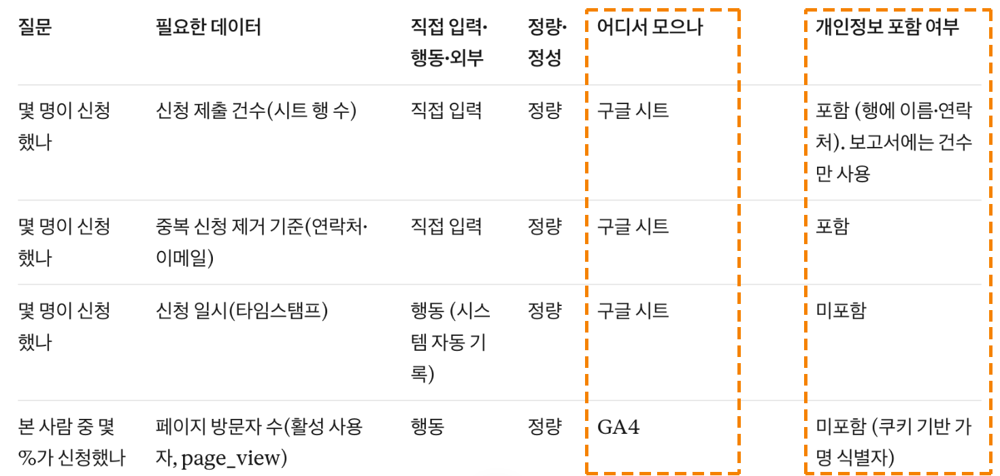
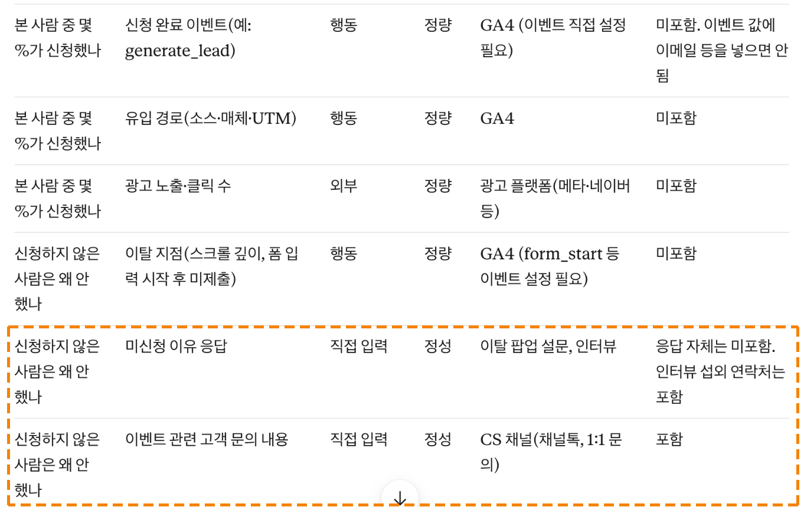
STEP 3. 표를 읽고 고치기
클로드가 GA4로 모으라고 한 칸에 이름·연락처 같은 개인정보가 있는지 봐요. 있으면 "개인정보는 GA4로 보내지 않게 고쳐 줘."라고 보내요.
강사가 같은 프롬프트를 보냈을 때 클로드는 표 아래에 두 가지를 더 짚었어요. 첫째, 신청률을 계산할 때 신청 수(시트)와 방문 수(GA4)를 서로 다른 도구에서 가져오면 기준이 어긋나니, 신청 완료도 GA4 이벤트로 세고 시트 숫자는 대조용으로 쓰라고 했어요. 둘째, "왜 안 했나"는 GA4로 답할 수 없고 설문이나 인터뷰가 필요하다고 했어요. 두 가지 모두 오늘 오후 실습과 이어져요.
확인할 점
- 질문마다 데이터가 한 가지 이상 연결되어 있다
- '왜 신청하지 않았나' 같은 질문에는 정성 데이터(인터뷰·설문)가 붙어 있다
- GA4로 모으는 데이터에 개인정보가 없다
결과1-5. 결과
이렇게 보이면 성공질문마다 시트·GA4·인터뷰 중 어디서 답을 찾을지 말할 수 있다
가설을 검증하려면 데이터가 필요해요
2주차 월요일에 문제 정의서에 가설과 지표를 적었던 것 기억하시나요? 이번에는 초기 프로덕트가 가설을 어떻게 검증하는지, 그때 데이터가 왜 필요한지 글로벌 기업 사례로 봐요.
개념2-1. 초기 프로덕트의 가설 검증
가설 검증이란?
초기 프로덕트는 "이 기능을 만들면 사용자가 이렇게 행동할 것이다"라는 가설에서 시작해요. 가설은 맞는지 틀리는지 아직 모르는 생각이에요. 그래서 작게 만들어 내보내고, 사용자의 반응을 재고, 그 결과로 다음에 할 일을 정해요. 에릭 리스는 『린 스타트업』에서 이 과정을 만들기 → 재기 → 배우기(Build–Measure–Learn)라고 불렀어요.
MVP(최소 기능 제품)는 에릭 리스의 정의로 "가장 적은 노력으로 고객에 대해 가장 많이 배울 수 있는 버전"이에요. 기능이 적은 제품이 아니라 배우기 위한 제품이에요.
왜 데이터가 필요한가요?
- 마이크로소프트와 구글이 검색 서비스에서 한 실험 가운데 지표가 좋아진 것은 10~20% 정도였어요(하버드 비즈니스 리뷰, 2017).
- 부킹닷컴은 실험 성공률을 약 10%로 봐요. 열 번 중 아홉 번은 생각이 틀린다는 뜻이에요(HBS Working Knowledge 인터뷰).
- 그래서 "좋아 보인다"가 아니라 "숫자가 바뀌었다"로 판단해요. 숫자를 보려면 처음부터 데이터를 모으도록 만들어야 해요.
단계마다 무엇을 볼까요? AARRR
데이브 매클루어가 2008년 발표에서 정리한 AARRR은 사용자가 지나가는 다섯 단계예요. 가설이 어느 단계를 바꾸려는 것인지 정하면 볼 숫자가 정해져요.
| 단계 | 뜻 | 연말 이벤트에서 볼 숫자 |
|---|---|---|
| Acquisition 획득 | 사용자가 들어온다 | 신청 페이지 방문 수, 들어온 경로 |
| Activation 활성화 | 처음으로 가치를 경험한다 | 방문한 사람 중 신청을 마친 비율 |
| Retention 유지 | 다시 온다 | 행사 뒤 다시 쇼핑몰에 온 비율 |
| Referral 추천 | 다른 사람에게 알린다 | 공유 단추를 누른 수 |
| Revenue 수익 | 돈을 낸다 | 쿠폰으로 결제한 수·금액 |
출처: Lean Startup Co. 원칙 · What is an MVP?(Eric Ries) · Kohavi·Thomke, The Surprising Power of Online Experiments(HBR 2017, 재게시본) · HBS Working Knowledge, Booking.com 인터뷰 · Dave McClure, Startup Metrics for Pirates(2008) (2026.11.09 확인)
개념2-2. A/B 테스트란?
A/B 테스트란?
방문자를 무작위로 두 무리로 나눠 한쪽에는 지금 화면(A), 다른 쪽에는 바꾼 화면(B)을 같은 기간에 보여 주고, 미리 정한 지표로 견주는 실험이에요. 같은 기간에 견주기 때문에 요일·날씨·광고 같은 다른 영향을 줄일 수 있어요.
조심할 점
결과가 좋아 보인다고 일찍 멈추면 착시일 수 있어요. 에어비앤비는 가격 필터 최댓값을 바꾼 실험에서 7일째에 4% 좋아진 것처럼 보였지만, 끝까지 돌리자 효과가 없었어요. 또 전체 숫자만 보면 놓치는 것이 있어요. 같은 회사의 다른 실험은 브라우저별로 쪼개 보고서야 구형 인터넷 익스플로러에서만 화면이 깨져 있던 것을 찾았어요.
출처: Jan Overgoor, Experiments at Airbnb, The Airbnb Tech Blog, 2014 (2026.11.09 확인)
사례2-3. 글로벌 기업의 A/B 테스트 사례
| 회사 | 바꾼 것 | 결과 | 출처 |
|---|---|---|---|
| 마이크로소프트 Bing | 검색 광고의 제목(헤드라인) 보여 주는 방식을 바꾸자는 아이디어. 우선순위가 낮아 6개월 넘게 미뤄졌다가 실험함 | 매출 12% 증가, 미국에서만 연 1억 달러 넘게 늘어난 것으로 추정 | HBR 2017(실험 책임자 기고) |
| 아마존 | 신용카드 안내를 홈페이지에서 장바구니 페이지로 옮김 | 연간 이익이 수천만 달러 늘었다고 소개됨(정확한 금액은 없음) | HBR 2017 |
| 오바마 2008 선거 캠프 | 가입 페이지의 단추 문구 4종 × 사진·영상 6종 = 24개 조합 | 'Learn More' 단추 + 가족 사진이 이김. 가입률 8.26% → 11.6%. 추가 기부금 6천만 달러는 추정치 | 당시 분석 책임자의 Optimizely 블로그(2010). 글쓴이가 A/B 도구 회사 창업자라는 점은 감안 |
| 부킹닷컴 | 누구나 허락 없이 실험을 시작할 수 있게 함 | 동시에 1,000건 남짓 실험, 성공률 약 10% | HBS Working Knowledge 인터뷰 |
| 넷플릭스 | 작품 대표 이미지(아트워크)를 바꿔 가며 실험하고, 사람마다 다른 이미지를 보여 줌 | 회원은 한 작품을 약 1.8초 보고, 그 시간의 82%를 이미지에 씀. 한 다큐는 이미지를 바꿔 재생 비율이 최대 14% 올랐다고 보도됨 | Engadget 2016 · StreamTVInsider(넷플릭스 블로그 인용 기사) |
다섯 사례의 공통점은 "누군가 좋다고 생각한 아이디어"를 바로 적용하지 않고 숫자로 확인했다는 점이에요. Bing 사례는 우선순위가 낮던 아이디어가 실험해 보니 큰 효과를 냈다는 점에서 자주 인용돼요.
출처: Kohavi·Thomke, HBR 2017(재게시본) · Dan Siroker, How Obama raised $60 million(Optimizely, 2010) · HBS Working Knowledge · Engadget 2016 · StreamTVInsider (2026.11.09 확인)
실습2-4. 연말 이벤트 가설을 실험으로 바꾸기
셀렉트마켓 연말 이벤트 신청 페이지에서 바꿔 보고 싶은 것 하나를 골라, 가설·지표·A/B 테스트 계획으로 만들어요.
STEP 1. 바꿀 것 하나 고르기
예: 신청 단추 문구, 맨 위 혜택 문구(선착순 사은품), 입력 칸 수, 마감 날짜를 보여 주는 위치.
STEP 2. 클로드에게 실험 계획 받기
프롬프트
요청: 연말 이벤트 신청 페이지의 A/B 테스트 계획을 짜 줘. 내용: 바꾸고 싶은 것은 [바꿀 것]이야. 지금은 [지금 모습]이고, 바꾼 안은 [바꾼 모습]이야. 형식: 가설 문장 1개(누가 / 무엇을 보면 / 어떤 숫자가 / 얼마나), 핵심 지표·보조 지표·나빠지면 안 되는 지표 각 1개, 필요한 GA4 이벤트, 판정 기준을 표로.
실행 결과
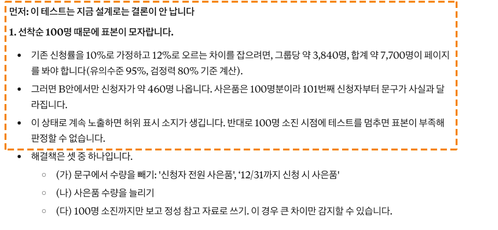
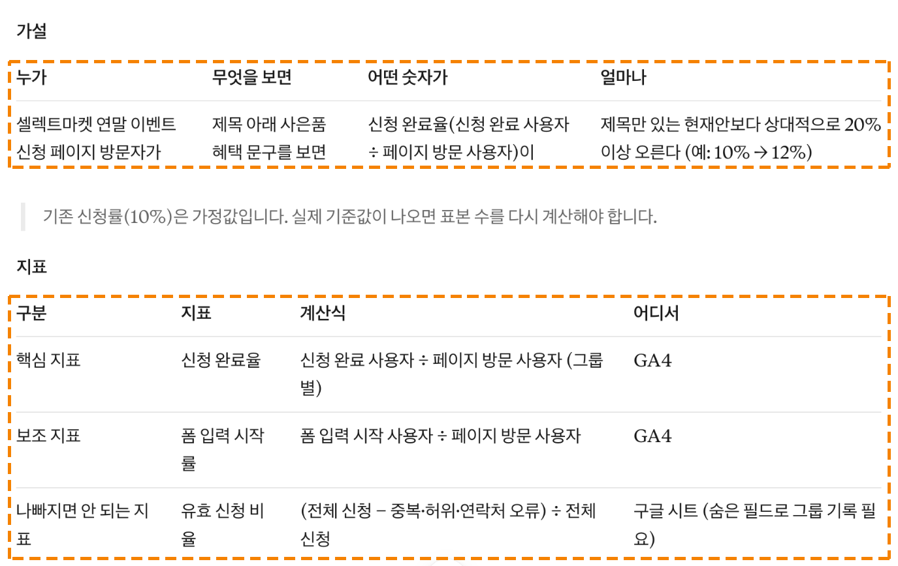
STEP 3. 판정할 수 있는지 따져 보기
강사가 '선착순 100명 사은품' 문구로 해 보니, 클로드는 계획보다 문제를 먼저 짚었어요. 차이를 판정하려면 그룹마다 수천 명이 페이지를 봐야 하는데 사은품은 100명분이라, 그 전에 문구가 사실과 달라진다는 것이에요. 실험할 안이 실제 운영과 맞는지도 함께 확인해요.
클로드가 적은 지표를 지금 데이터로 셀 수 있는지 봐요. 신청 수는 시트로 셀 수 있지만, 방문 수와 단추 클릭 수는 GA4가 있어야 셀 수 있어요. 그래서 오후에 GA4를 붙이고, 셀 이벤트의 이름을 정해요.
확인할 점
- 가설에 '누가 / 무엇을 / 어떤 숫자가'가 모두 있다
- 핵심 지표가 셀 수 있는 행동이다('만족도 향상'처럼 셀 수 없는 말이 아니다)
- 판정 기준(언제까지, 몇 명까지 보고 정할지)이 있다
이렇게 하면 결과가 틀어져요
| 한 일 | 생기는 일 |
|---|---|
| A안을 이번 주, B안을 다음 주에 보여 줌 | 요일·날씨·광고가 달라서 무엇 때문에 숫자가 바뀌었는지 알 수 없어요 |
| 한 번에 문구·색·사진을 모두 바꿈 | 이겨도 무엇 덕분인지 알 수 없어요 |
| 첫날 숫자가 좋아서 바로 멈춤 | 에어비앤비 사례처럼 착시일 수 있어요 |
결과2-5. 결과
이렇게 보이면 성공내 가설을 판정하려면 어떤 숫자를 어디서 모아야 하는지 말할 수 있다
쌓인 신청 데이터 정리하기(전처리)
입력 화면을 열어 두면 사람마다 다르게 적은 값이 쌓여요. 신청이 몇 주 쌓인 지저분한 명단을 받아, 원본은 그대로 두고 '정리본'을 만들어요.
개념3-1. 전처리란?
전처리란?
전처리는 모은 데이터를 쓰기 전에 빈칸·중복·형식을 정리하는 일이에요. 분석이나 AI에 넣기 전에 가장 먼저 해요.
어떤 문제를 해결하나요?
같은 사람이 두 번 들어가 있거나, 연락처가 01012345678과 010-1234-5678로 섞여 있으면 인원도, 문자 발송 목록도 틀려요. 전처리를 하면 같은 규칙으로 센 숫자를 얻어요.
조심할 점
정리하다가 원본을 지우면 무엇을 바꿨는지 되돌릴 수 없어요. 그래서 원본은 그대로 두고 정리본을 새로 만들어요. 그리고 규칙으로 판단할 수 없는 줄(같은 사람의 두 번째 신청 등)은 지우지 않고 '확인 필요'로 표시해 사람이 결정해요.
| 정리 방법 | 예 | 누가 정하나요 |
|---|---|---|
| 지우기 | 모든 칸이 똑같은 줄(복사 실수) | 규칙으로 바로 처리 |
| 형식 맞추기 | 연락처 010-0000-0000, 'online' → '온라인' | 규칙으로 바로 처리 |
| 표시만 하기 | 이메일 없음, 같은 이메일로 두 번 신청 | 사람이 보고 결정 |
실습3-2. 지저분한 명단에서 문제 찾기
STEP 1. 실습 파일 받아 '원본' 시트 만들기
신청 명단 시트(없으면 복습 2에서 만들어요)에서 [파일] → [가져오기] → [업로드]로 이 파일을 올려요.
이번에는 가져오기 위치를 [새 시트 삽입](①)으로 골라요. [텍스트를 숫자, 날짜, 수식으로 변환]의 체크를 해제(②)해요. 체크를 켜 두면 시트가 신청일시 같은 값을 날짜로 바꿔 원본과 모양이 달라져요(09:50 → 9:50). [데이터 가져오기](③)를 눌러요.
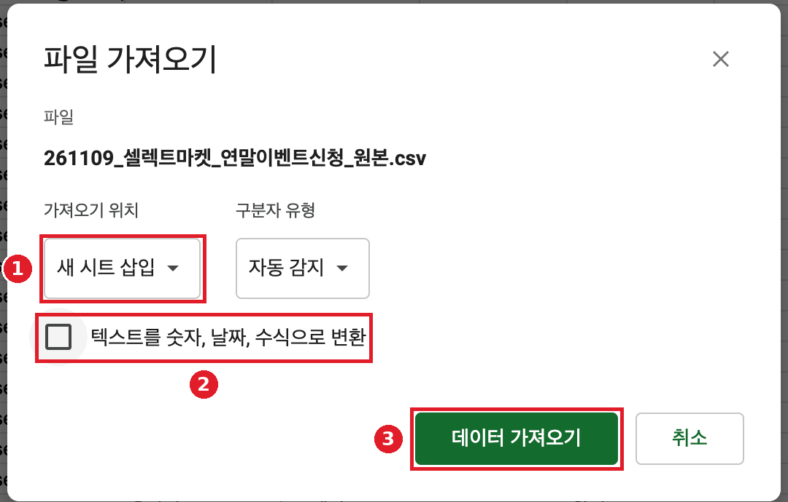
실습 파일을 새 시트로 가져오는 창 빨간 번호 = 누를 곳(순서) 아래쪽에 새로 생긴 시트 탭(①, 이름은 'Untitled')을 두 번 눌러 이름을 [원본]으로 바꿔요.
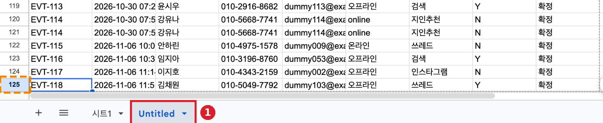
새로 생긴 시트 탭 빨간 번호 = 누를 곳(순서) 주황 점선 = 확인할 곳
STEP 2. 눈으로 문제 찾기
[원본] 시트를 위에서 아래로 훑어보며, 같은 열인데 적는 방식이 다른 곳을 찾아요. 5분 동안 찾은 것은 메모장에 짧게 적어 두고, 3-4에서 프롬프트를 고칠 때 써요.
정답 비교
| 열 | 이런 값이 섞여 있어요 | 찾아볼 신청번호 |
|---|---|---|
| 연락처 | 01061748438, 010 1234 5678, 010.1234.5678, 빈칸 | EVT-004 · EVT-066 |
| 신청일시(KST) | 2026-10-26 09:56 형식 사이에 섞인 2026/10/27 9:05 | 열 전체를 훑어보기 |
| 이메일 | 빈칸, @가 없는 주소 | EVT-007 · EVT-024 |
| 참석유형 | online, offline, 오프 라인 | 필터로 값 목록 보기 |
| 마케팅수신동의 | y, yes, n, no, 빈칸 | 필터로 값 목록 보기 |
| 줄 전체 | 모든 칸이 똑같은 줄 6개, 같은 이메일로 다시 신청한 줄 | EVT-115 ~ EVT-118 |
막히면
[데이터] → [필터 만들기]를 눌러요. 열 이름 옆 필터 단추(①)를 누르면 그 열에 들어 있는 값이 모두 목록으로 보여요.
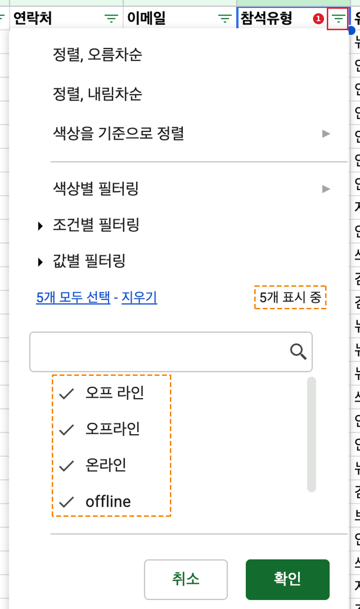
실습3-3. 시트 기능으로 먼저 정리해 보기
구글 시트에는 정리 기능이 이미 있어요. 메뉴로 되는 일과 안 되는 일을 먼저 나눠 봐요. 원본은 그대로 두고 사본에서 해요.
STEP 1. 연습용 사본 만들기
[원본] 탭(①)을 마우스 오른쪽 단추로 누르고 [복사](②)를 눌러요. '원본의 사본' 탭이 생기면 이름을 [연습]으로 바꿔요.
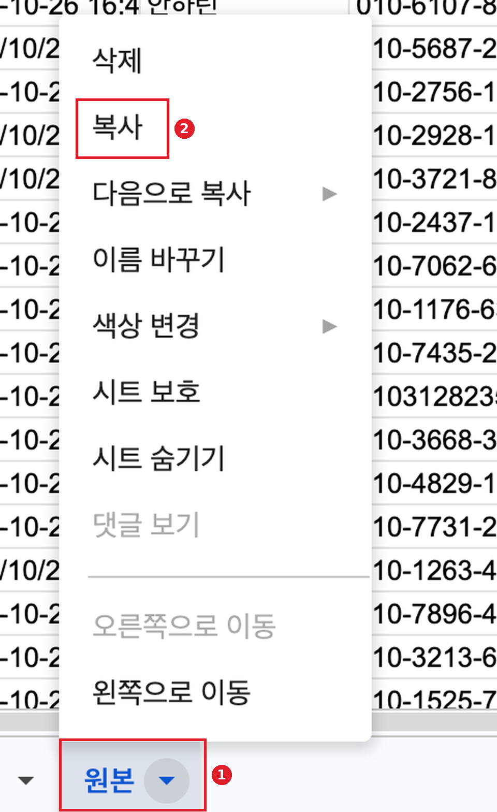
STEP 2. 중복 항목 삭제
[연습] 시트 왼쪽 위 빈 네모(①)를 눌러 시트 전체를 골라요. [데이터] → [데이터 정리](②) → [중복 항목 삭제](③)를 눌러요(영어 화면: Data → Data cleanup → Remove duplicates).
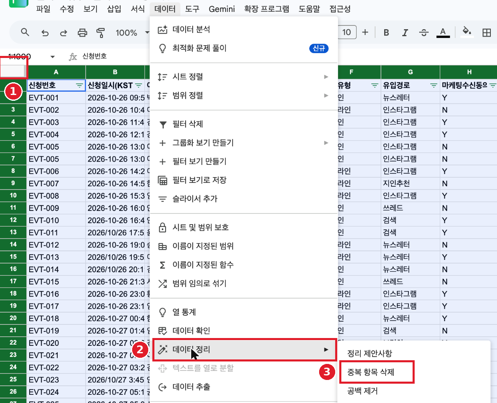
데이터 정리 메뉴 빨간 번호 = 누를 곳(순서) [데이터에 머리글 행이 있습니다.](①)에 체크하고, 분석할 열이 모두 체크된 채 [중복 항목 삭제](②)를 눌러요.
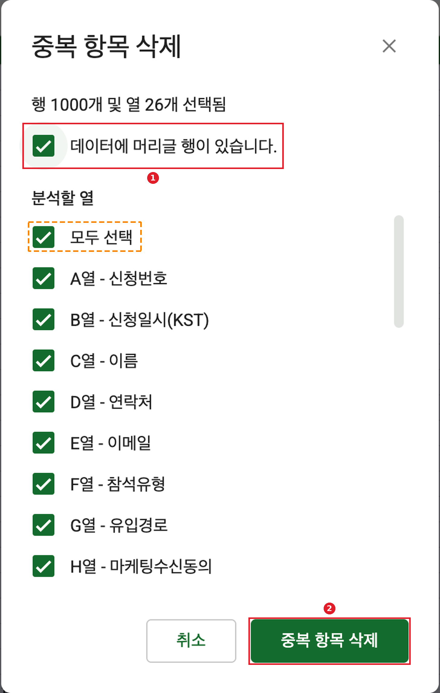
중복 항목 삭제 창 빨간 번호 = 누를 곳(순서) 주황 점선 = 확인할 곳 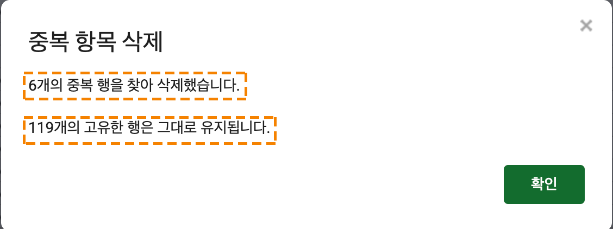
중복 항목 삭제가 끝난 알림 주황 점선 = 확인할 곳
[데이터 정리] 안의 [공백 제거]는 칸 앞뒤의 공백을 지워요. CSV 파일을 [가져오기]로 넣으면 시트가 앞뒤 공백을 이미 지워 줘서, 이 실습 파일에서는 눌러도 바뀌는 칸이 없어요.
출처: 구글 스프레드시트 고객센터 텍스트 분할, 중복 항목 삭제, 공백 제거 (2026.11.08 확인)
확인할 점
- 알림에 '6개의 중복 행'과 '119개의 고유한 행'이 나온다(119행은 첫 줄 열 이름을 포함한 수, 신청은 118줄)
- 그래도 01061748438, online, yes처럼 모양이 다른 값은 그대로 남아 있다
| 시트 메뉴로 되는 일 | 메뉴로 안 되는 일 → 3-4에서 앱스스크립트로 |
|---|---|
| 모든 칸이 똑같은 줄 지우기, 앞뒤 공백 지우기 | 연락처·날짜 형식 맞추기, 'online'을 '온라인'으로 바꾸기, '확인 필요' 이유 적기, 매주 같은 정리를 버튼 하나로 다시 하기 |
실습3-4. 앱스스크립트로 정리 버튼 만들기
메뉴로 안 되는 정리를 규칙으로 적어 클로드에게 코드를 받아요. 시트 위쪽 메뉴에 [데이터 정리] 버튼이 생기면, 다음 주에 신청이 더 쌓여도 버튼 한 번으로 같은 정리를 다시 할 수 있어요.
STEP 1. 정리 규칙 세우기
3-2에서 찾은 문제를 아래 규칙과 견줘 봐요. 내가 찾았는데 규칙에 없는 것이 있으면 프롬프트의 규칙에 한 줄 더해요.
예시정리 규칙 9가지
| 번호 | 규칙 | 정리 방법 |
|---|---|---|
| ① | 모든 칸의 앞뒤 공백 지우기 | 형식 맞추기 |
| ② | 모든 칸이 똑같은 줄은 하나만 남기기 | 지우기 |
| ③ | 연락처는 010-0000-0000 형식 | 형식 맞추기 |
| ④ | 신청일시는 2026-10-26 09:05 형식 | 형식 맞추기 |
| ⑤ | 참석유형은 '온라인'이나 '오프라인' 둘 중 하나 | 형식 맞추기 |
| ⑥ | 마케팅수신동의는 Y나 N(yes·y → Y, no·n → N), 비어 있으면 빈칸으로 두기 | 형식 맞추기 + 표시만 하기 |
| ⑦ | 연락처나 이메일이 비었거나, 이메일에 @가 없으면 줄을 지우지 않기 | 표시만 하기 |
| ⑧ | 같은 이메일이 두 줄 이상이면 지우지 않기 | 표시만 하기 |
| ⑨ | ⑥~⑧에 해당하면 맨 오른쪽 '확인 필요' 열에 이유 적기 | 표시만 하기 |
STEP 2. 클로드에게 정리 코드 받기
이 코드는 웹 앱이 아니라 시트에 붙는 코드예요. 클로드 새 대화를 열어 보내요.
프롬프트
요청: 구글 시트의 [원본] 시트는 그대로 두고, 정리한 결과를 [정리본] 시트에 새로 만드는 앱스스크립트를 짜 줘. 시트 위쪽 메뉴에 [데이터 정리] 메뉴와 [정리본 만들기] 버튼도 만들어 줘. 내용: 열은 신청번호, 신청일시(KST), 이름, 연락처, 이메일, 참석유형, 유입경로, 마케팅수신동의, 상태야. 정리 규칙은 ① 모든 칸 앞뒤 공백 지우기 ② 모든 칸이 똑같은 줄은 하나만 남기기 ③ 연락처는 010-0000-0000 형식 ④ 신청일시는 2026-10-26 09:05 형식 ⑤ 참석유형은 온라인/오프라인 둘 중 하나 ⑥ 마케팅수신동의는 Y/N, 비어 있으면 빈칸 ⑦ 연락처·이메일이 비었거나 이메일에 @가 없어도 줄을 지우지 않기 ⑧ 같은 이메일이 두 줄 이상이어도 지우지 않기 ⑨ ⑥~⑧에 해당하면 맨 오른쪽 '확인 필요' 열에 이유 적기야. [정리본]이 이미 있으면 지우고 새로 만들어 줘. 규칙에 없는 값은 바꾸거나 새로 채우지 마. 형식: 새 스크립트 파일 cleanup.gs에 넣을 전체 코드와 실행 순서. 실행이 끝나면 '원본 ○줄 → 정리본 ○줄, 확인 필요 ○줄'을 알림 창으로 보여 줘.
실행 결과
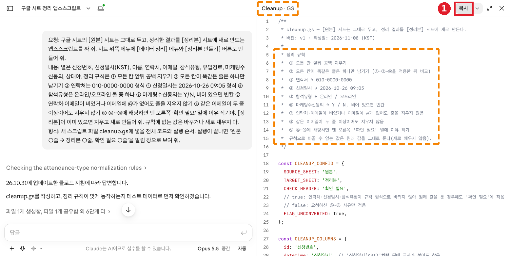
STEP 3. 붙여 넣고 실행하기
신청 명단 시트에서 [확장 프로그램] → [Apps Script]를 열어요. 복습 3·4의 웹 앱 코드가 든 Code.gs는 그대로 두고, [파일] 옆 [+](①) → [스크립트](②)로 새 파일을 만들고, 파일 목록에 생긴 이름 칸에
cleanup을 써요. 클로드가 준 코드를 붙여 넣고 저장해요.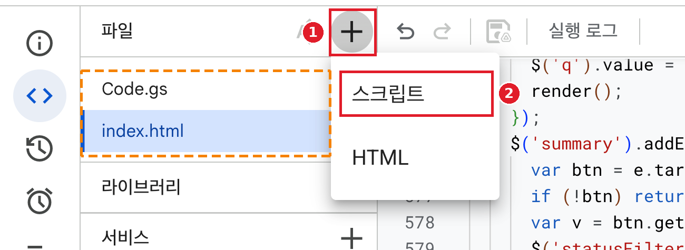
스크립트 파일을 새로 만드는 곳 빨간 번호 = 누를 곳(순서) 주황 점선 = 확인할 곳 시트 탭으로 돌아가 새로고침해요. 위쪽 메뉴 끝에 [데이터 정리]가 생겼는지 봐요.
[데이터 정리](①) → [정리본 만들기](②)를 눌러요. 처음에는 권한 창이 떠요. 복습 3-2 STEP 4처럼 승인하고, 한 번 더 눌러요.
캡처 자리images/d1-s5-menu-hl.png누를 곳 · ① [데이터 정리] ② [정리본 만들기]시트에 새로 생긴 데이터 정리 메뉴 빨간 번호 = 누를 곳(순서) 알림 창의 숫자를 아래 기준값과 견줘요.
실행 결과
캡처 자리images/d1-s5-alert-hl.png확인할 곳 · 원본 124줄 → 정리본 118줄, 확인 필요 18줄정리본 만들기가 끝난 알림 창 주황 점선 = 확인할 곳 실행 결과
캡처 자리images/d1-s5-cleaned-sheet-hl.png확인할 곳 · [정리본] 탭 · 맨 오른쪽 확인 필요 열 · 바뀐 연락처 형식새로 만들어진 정리본 시트 주황 점선 = 확인할 곳
막히면
| 이렇게 보이면 | 이렇게 해요 |
|---|---|
| [데이터 정리] 메뉴가 안 보여요 | 시트 탭을 새로고침해요. 그래도 없으면 "onOpen 함수로 메뉴가 생기게 했는지 확인해 줘."라고 클로드에게 보내요. |
| 복습 3·4의 웹 앱이 망가졌어요 | 새 코드에 doGet이나 같은 이름의 함수가 또 있으면 서로 부딪혀요. "웹 앱 코드와 함수 이름이 겹치지 않게 바꿔 줘."라고 보내요. |
STEP 4. 기준값과 견주기
기준값실습 파일(124줄)을 위 9가지 규칙으로 정리한 결과예요
| 항목 | 기준값 |
|---|---|
| 원본 → 정리본 | 124줄 → 118줄 (똑같은 줄 6개 지움) |
| 형식을 맞춘 칸 | 연락처 12칸 · 신청일시 8칸 |
| 참석유형 | 온라인 60 · 오프라인 58 (다른 값 0) |
| 마케팅수신동의 | Y 60 · N 55 · 빈칸 3 |
| 확인 필요 | 18줄 = 중복 신청 의심 8 (4명이 두 번씩) · 이메일 없음 3 · 이메일 형식 오류 2 · 수신동의 비어 있음 3 · 연락처 없음 2 |
숫자가 다르면
| 이렇게 다르면 | 클로드에게 이렇게 물어요 |
|---|---|
| 정리본이 118줄보다 적어요 | "규칙 ⑦·⑧에 해당하는 줄을 지운 것 같아. 어떤 줄을 지웠는지 신청번호로 알려 주고, 지우지 않게 고쳐 줘." |
| 참석유형에 다른 값이 남았어요 | "참석유형에 [남은 값]이 남았어. 대소문자와 띄어쓰기를 무시하고 온라인/오프라인으로 바꿔 줘." |
| 확인 필요가 18줄이 아니에요 | "확인 필요 열을 이유별로 세어 줘. 기준은 중복 신청 의심 8, 이메일 없음 3, 이메일 형식 오류 2, 수신동의 비어 있음 3, 연락처 없음 2야. 기준과 다른 이유를 찾아 코드를 고쳐 줘." |
| 수신동의 빈칸이 N으로 바뀌었어요 | "규칙 ⑥에 빈칸은 빈칸으로 두라고 했어. 값을 새로 채우지 않게 고쳐 줘." |
이렇게 하면 결과가 틀어져요
규칙 ⑧ 없이 "중복을 정리해 줘."라고만 하면, AI가 같은 이메일의 두 번째 신청을 지워 버릴 수 있어요. 두 번째 신청이 참석유형을 바꾸려던 것이라면 바뀐 내용이 사라져요. 지울지 말지는 사람이 정해요.
결과3-5. 결과
이렇게 보이면 성공알림 창에 '원본 124줄 → 정리본 118줄, 확인 필요 18줄'이 나온다
화요일에는 웹에서 데이터를 모아요(크롤링). 모은 데이터도 오늘처럼 원본을 두고 규칙으로 정리본을 만들어요.
GA로 사용자의 행동을 모으고 보고서 보기
지금까지는 사용자가 직접 입력한 데이터를 모았어요. 이번에는 사용자가 입력하지 않아도 남는 데이터, 곧 페이지를 열고 머문 기록을 GA로 모아요.
개념4-1. GA란?
GA란?
GA(Google 애널리틱스)는 내 웹사이트를 몇 명이, 언제, 어떤 페이지로 열었는지 모아 보여 주는 구글의 무료 도구예요. 오늘 쓰는 버전은 GA4예요.
어떤 문제를 해결하나요?
사용자는 방문했다고 직접 알려 주지 않아요. 페이지에 Google 태그(짧은 코드)를 넣어 두면, 사용자가 페이지를 열 때마다 GA로 기록이 보내져요.
| 구분 | 직접 입력된 데이터 | 행동 데이터 |
|---|---|---|
| 예 | 이름, 연락처, 참석유형 | 페이지를 연 수, 머문 시간, 들어온 경로 |
| 모으는 곳 | 구글 시트(3세션) | GA |
| 답할 수 있는 질문 | 누가 신청했나요? | 몇 명이 보고, 그중 몇 명이 신청했나요? |
조심할 점
태그를 넣은 뒤 데이터가 모이기 시작하기까지 최대 30분이 걸릴 수 있어요. 이름·이메일 같은 개인 정보는 GA로 보내지 않아요. GA는 행동만, 시트는 신청 내용만 모아요.
출처: Google 애널리틱스 고객센터 웹사이트에 애널리틱스 설정하기(계정·속성·웹 데이터 스트림·Google 태그) · 실시간 보고서 (2026.11.08 확인)
처음이면 [측정 시작](①)을 눌러요. 다음에 들어올 때는 왼쪽 아래 [관리](톱니바퀴)에서 계정과 속성을 볼 수 있어요.
실습4-2. 이벤트 신청 페이지에 GA 붙이기
지난주 목요일에 버셀로 이벤트 신청 페이지를 배포했던 것 기억하시나요? 그때 깃헙 저장소에 올린 index.html에 Google 태그를 넣어요. 깃헙에 저장하면 버셀이 다시 배포해 줘요.
STEP 1. 계정과 속성 만들기
analytics.google.com에서 [측정 시작]을 누르고, 계정 이름(①)에 [셀렉트마켓 수업용]을 써요. 아래로 내려 데이터 공유 설정을 확인하고 [다음]을 눌러요. 이미 GA 계정이 있으면 [관리] → [만들기] → [계정]으로 같은 화면이 열려요.

계정 만들기 화면 빨간 번호 = 누를 곳(순서) 속성 이름(①)에 [연말 이벤트 신청 페이지]를 쓰고, 보고 시간대(②)는 [대한민국], 통화는 [대한민국 원(₩)]으로 골라요. [다음](③)을 누르고, 업종(예: 쇼핑)·규모를 고른 뒤 비즈니스 목표에서 [리드 생성]과 [웹 또는 앱 트래픽 파악]을 골라 [만들기]를 눌러요. 처음 만드는 계정이면 약관에 동의해요.
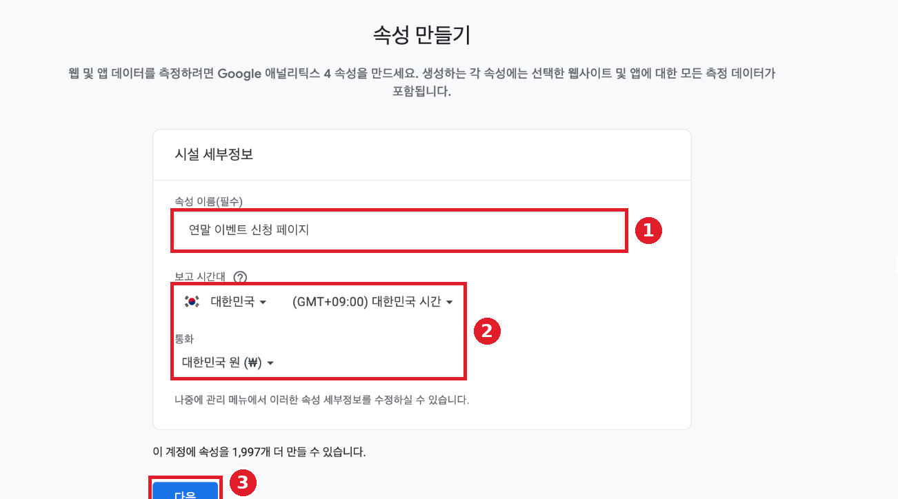
속성 만들기 화면 빨간 번호 = 누를 곳(순서)
STEP 2. 웹 데이터 스트림 만들기
데이터를 모을 곳을 고르는 화면에서 [웹](①)을 눌러요.
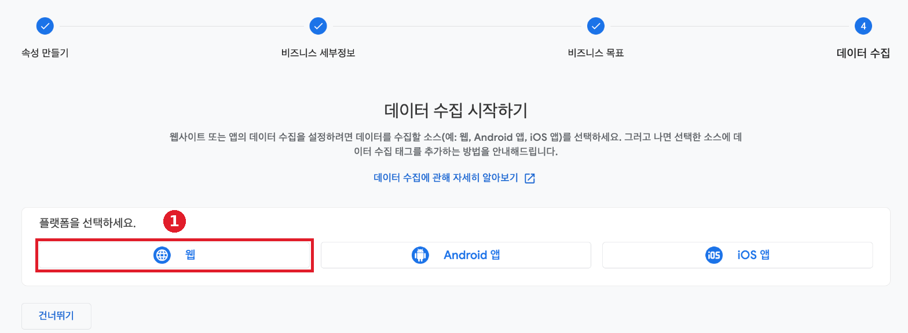
데이터 수집 플랫폼을 고르는 화면 빨간 번호 = 누를 곳(순서) 웹사이트 URL(①)에 버셀 주소(예: [내프로젝트].vercel.app)를, 스트림 이름(②)에 [이벤트 신청 페이지]를 써요. 향상된 측정은 켠 채로 두고 [만들고 계속하기](③)를 눌러요.
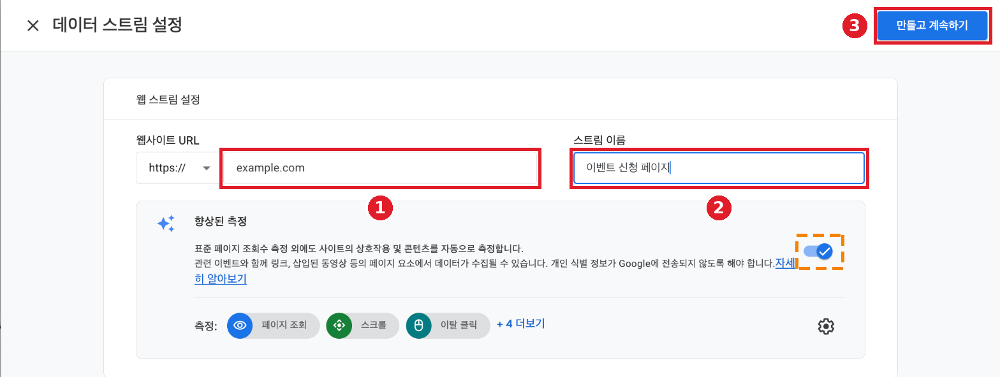
웹 데이터 스트림 설정 화면 빨간 번호 = 누를 곳(순서) 주황 점선 = 확인할 곳
STEP 3. Google 태그 복사하기
[웹 스트림 세부정보] 화면 위쪽 노란 안내의 [태그 안내 보기](①)를 눌러요. G-로 시작하는 측정 ID도 여기서 확인해요.
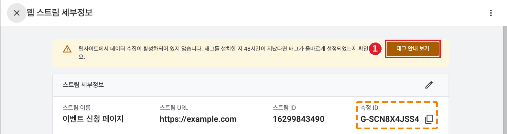
Google 태그 설치 안내 화면 빨간 번호 = 누를 곳(순서) 주황 점선 = 확인할 곳 설치 안내에서 [직접 설치](①) 탭을 누르면 코드가 나와요. 첫 줄
<script async부터 마지막</script>까지 통째로 복사해요. 복사 아이콘(②)을 눌러도 돼요. 코드 속 태그 ID는 계정마다 달라요.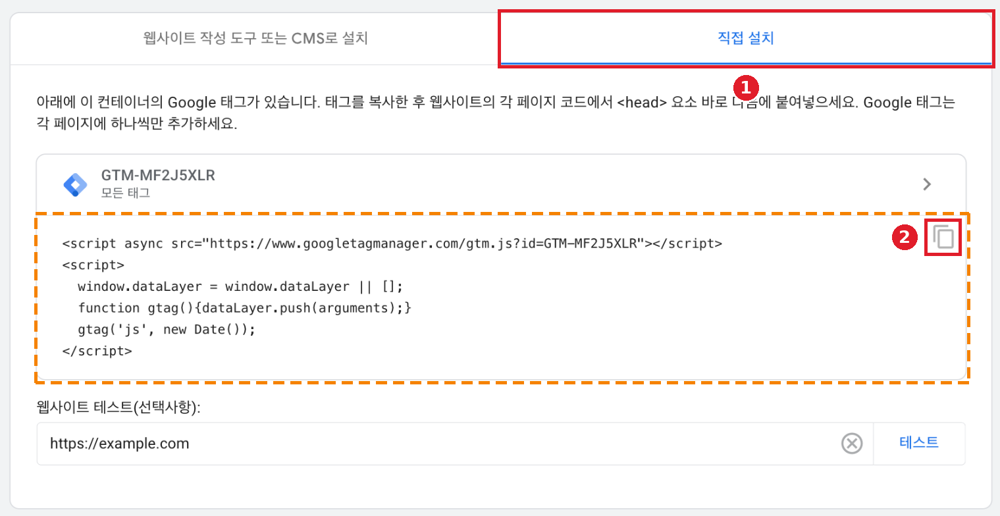
복사할 Google 태그 코드 빨간 번호 = 누를 곳(순서) 주황 점선 = 확인할 곳
STEP 4. index.html에 붙여 넣고 저장하기
지난주 목요일에 버셀과 연결한 깃헙 저장소를 열고 index.html을 눌러요. 오른쪽 위 연필 아이콘(①)을 눌러 편집 화면을 열어요.
캡처 자리images/d1-s6-github-edit-hl.png누를 곳 · ① 연필 아이콘깃헙에서 index.html을 편집하는 곳 빨간 번호 = 누를 곳(순서) <head>줄(①) 바로 아래 새 줄에 복사한 코드를 붙여 넣어요. [Commit changes...](②)를 누르고, 메시지에 [GA 태그 추가]를 써서 한 번 더 [Commit changes](③)를 눌러요.캡처 자리images/d1-s6-github-paste-hl.png누를 곳 · ① <head> 줄 ② [Commit changes...] ③ [Commit changes]head 바로 아래에 Google 태그를 붙여 넣은 화면 빨간 번호 = 누를 곳(순서) 버셀 대시보드에서 새 배포가 [Ready]가 되는지 봐요.
캡처 자리images/d1-s6-vercel-ready-hl.png확인할 곳 · 새 배포의 [Ready] 표시와 커밋 메시지커밋 뒤 버셀에 생긴 새 배포 주황 점선 = 확인할 곳
STEP 5. 실시간 보고서에서 내 방문 확인하기
버셀 주소를 PC와 휴대폰에서 각각 열어요.
GA 왼쪽 메뉴에서 [보고서](①) → [실시간](②)을 눌러요. 지난 30분 동안의 방문이 보여요.
캡처 자리images/d1-s6-realtime-hl.png누를 곳 · ① [보고서] ② [실시간]확인할 곳 · 지난 30분 동안의 사용자 수 · 기기(데스크톱·모바일)GA 실시간 보고서 빨간 번호 = 누를 곳(순서) 주황 점선 = 확인할 곳
확인할 점
- index.html의 <head> 바로 아래에 Google 태그가 있다
- 버셀 새 배포가 Ready다
- 실시간 보고서에 사용자 수가 1 이상으로 보인다
- 시트에 쌓이는 신청 내용과 GA에 쌓이는 방문이 서로 다른 데이터라는 것을 말할 수 있다
막히면
| 이렇게 보이면 | 이렇게 해요 |
|---|---|
| 실시간 보고서가 0이에요 | 데이터가 모이기 시작하기까지 최대 30분이 걸릴 수 있어요. 페이지를 새로고침하고 몇 분 뒤에 다시 봐요. 광고 차단 확장 프로그램을 켜 두었다면 끄거나 휴대폰으로 열어 봐요. |
| 버셀 주소에 태그가 안 보여요 | 페이지에서 마우스 오른쪽 단추 → [페이지 소스 보기]를 열고 gtag를 찾아요. 없으면 버셀 새 배포가 끝났는지, 커밋한 브랜치가 버셀과 연결된 브랜치인지 봐요. |
| 지난주 목요일 버셀 배포가 없어요 | GitHub Pages로 공개한 페이지에 같은 방법으로 넣어도 돼요. 웹사이트 URL만 그 주소로 써요. |
실습4-3. 데이터가 쌓인 GA로 보고서 보기
방금 붙인 내 GA에는 데이터가 아직 거의 없어요. 보고서를 읽는 연습은 구글이 공개한 GA4 데모 계정으로 해요. 구글이 운영하는 굿즈 쇼핑몰(Google Merchandise Store)의 실제 데이터가 들어 있고, 구글 계정만 있으면 누구나 볼 수 있어요.
STEP 1. 데모 계정 열기
애널리틱스 고객센터의 데모 계정 도움말을 열고, '데모 계정 액세스' 아래 링크 [Google 애널리틱스 4 속성: Google Merchandise Store(웹 데이터)](①)를 눌러요. 주소창에 데모 주소를 직접 붙여 넣으면 도움말로 되돌아올 수 있어서, 도움말의 링크를 눌러 들어가요.
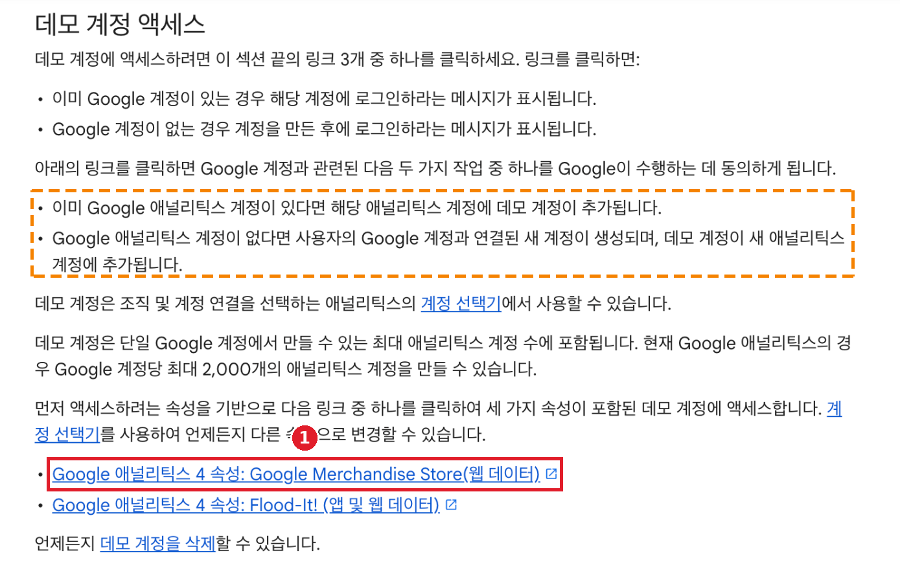
애널리틱스 고객센터의 데모 계정 액세스 링크 빨간 번호 = 누를 곳(순서) 주황 점선 = 확인할 곳 링크를 누르면 내 애널리틱스 계정에 데모 계정이 추가되고 홈 화면이 열려요. 활성 사용자·세션수·구매 같은 숫자와 지난 7일 그래프가 보이면 성공이에요. 왼쪽 메뉴에서 [보고서](①)와 [탐색](②)을 차례로 써요.
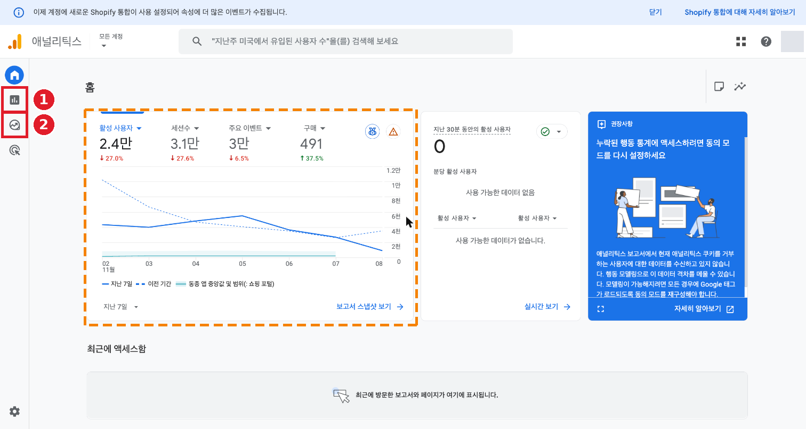
GA4 데모 계정(Google Merchandise Store) 홈 화면 빨간 번호 = 누를 곳(순서) 주황 점선 = 확인할 곳
STEP 2. 기본 보고서: 사람들은 어디서 왔나
[보고서] → [획득](①) → [Traffic acquisition](②)을 눌러요. 데모 계정은 메뉴 일부가 영어로 보여요. 들어온 경로(채널)별로 세션 수와 머문 시간이 보여요.
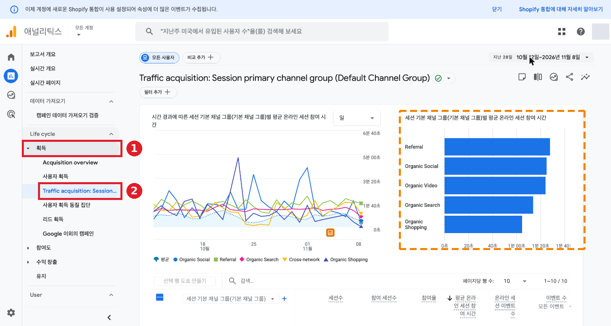
STEP 3. 탐색 보고서: 유입경로 만들기
왼쪽 [탐색]을 누르고 [유입경로 탐색 분석](①)을 눌러요. 처음 열 때/방문 → 세션 시작 → 화면/페이지 조회 → 구매, 4단계가 미리 들어 있어요.
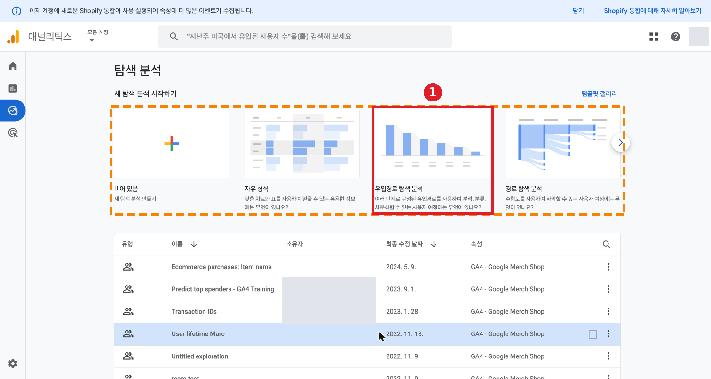
탐색 분석 첫 화면 빨간 번호 = 누를 곳(순서) 주황 점선 = 확인할 곳 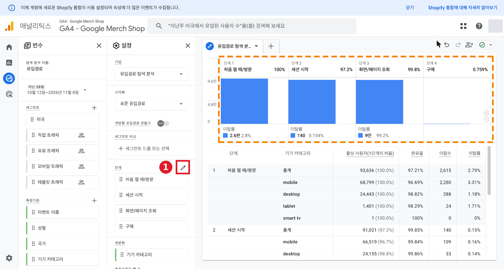
유입경로 탐색 분석 기본 화면 빨간 번호 = 누를 곳(순서) 주황 점선 = 확인할 곳 [단계] 옆 연필(①)을 눌러요. 단계마다 어떤 이벤트를 세는지 보여요. 1단계는 first_open 또는 first_visit, 2단계는 session_start예요. 유입경로의 단계는 결국 이벤트 이름이에요.
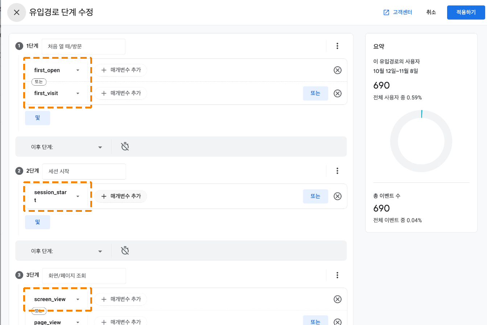
유입경로 단계 수정 창: 단계마다 세는 이벤트 이름 주황 점선 = 확인할 곳 3단계 이름 칸(①)을 [장바구니 담기]로 바꾸고, 이벤트(②)를 add_to_cart로 골라요. page_view 줄은 오른쪽 ⊗로 지워요. [적용하기](③)를 눌러요.
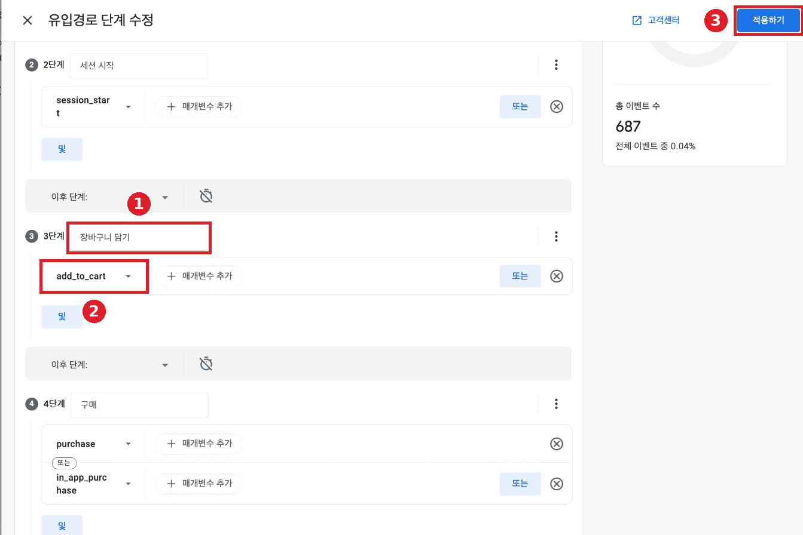
3단계를 장바구니 담기(add_to_cart)로 바꾼 화면 빨간 번호 = 누를 곳(순서)
실행 결과

STEP 4. 숫자로 질문 만들기
아래 표는 강사가 2026년 11월 9일에 본 숫자예요. 날짜에 따라 내 화면의 숫자는 달라요. 숫자 자체보다 "어디서 가장 많이 빠지나"를 봐요.
| 보이는 것 | 숫자(지난 28일) | 떠올릴 질문 |
|---|---|---|
| 세션 시작 → 장바구니 담기 | 3.6%만 다음 단계로 | 가장 많이 빠지는 곳은 여기예요. 상품을 보고도 담지 않는 이유는 무엇일까? |
| 같은 단계, 기기별 | 휴대폰 1.15% · PC 10.22% | 휴대폰에서 장바구니 단추가 잘 안 보이나? 휴대폰은 구경만 하나? |
| 장바구니 담기 → 구매 | 21.1% | 담은 뒤에는 다섯 명 중 한 명이 사요. 결제 단계보다 담기 전이 더 큰 문제예요 |
보고서는 답이 아니라 다음에 확인할 질문을 줘요. 휴대폰과 PC의 차이가 왜 생기는지는 GA만으로는 알 수 없어요. 화면을 직접 보거나(히트맵), 사용자에게 물어봐야(인터뷰) 해요.
확인할 점
- 데모 계정 홈에 숫자와 그래프가 보인다
- 트래픽 획득 보고서에서 채널 이름(Organic Search 등)을 읽을 수 있다
- 유입경로에 '장바구니 담기' 단계가 들어가고, 단계별 이탈률이 보인다
- 가장 많이 빠지는 단계와 그 이유를 확인할 질문을 하나 말할 수 있다
출처: Google 애널리틱스 고객센터 데모 계정 · 탐색 분석 시작하기 (2026.11.09 확인)
실습4-4. 보고서를 내 메일로 정기적으로 받기
현장에서는 매일 GA에 들어가 보기 어려워요. 그래서 자주 보는 보고서를 정해 두고, 매주 같은 요일에 메일로 받아 봐요. GA4 보고서 오른쪽 위 [이 보고서 공유]에서 바로 보내거나(이메일 보내기), 정기적으로 보내게(이메일 예약) 할 수 있어요.
| 항목 | 내용 |
|---|---|
| 누가 만들 수 있나 | 속성의 관리자만 예약할 수 있어요. 데모 계정처럼 보기 권한만 있으면 [링크 공유]만 보여요 |
| 누구에게 보내나 | 그 속성에 접근 권한이 있는 사용자. 한 번에 50명까지 |
| 얼마나 자주 | 매일 · 매주 · 매월 · 분기. 첫 발송일은 내일부터 고를 수 있고, 사용 기간은 1~12개월 |
| 어떤 형식 | PDF 또는 CSV 첨부. 실시간 보고서는 예약할 수 없어요 |
| 어디서 관리하나 | [관리] → 속성 설정의 [예약된 이메일] |
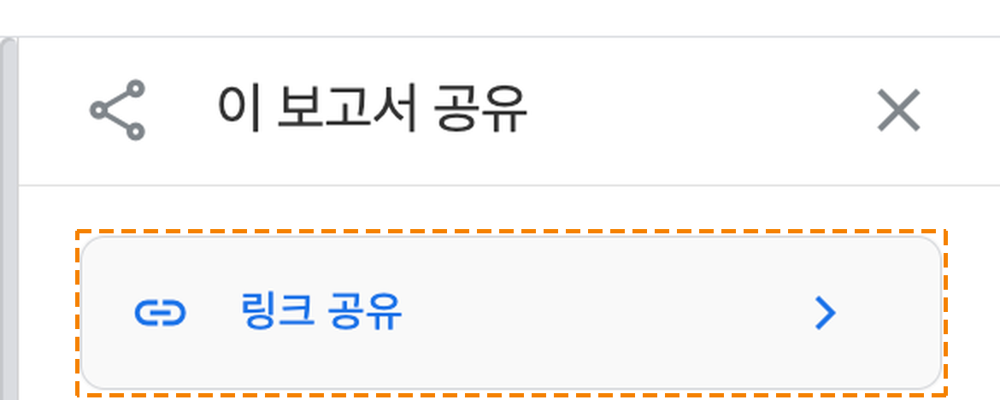
STEP 1. 내 속성에서 보고서 열기
4-2에서 만든 내 GA 속성(내가 관리자)으로 바꿔요. 왼쪽 위 속성 이름을 눌러 바꿀 수 있어요. [보고서] → [웹 또는 앱 트래픽 파악] → [페이지 및 화면]을 열어요. 새로 만든 속성은 보고서 메뉴가 '비즈니스 목표' 묶음으로 보여요.
STEP 2. 지금 한 번 보내 보기
오른쪽 위 공유 아이콘(①)을 누르면 [이메일 보내기](②)와 [이메일 예약](③)이 보여요. 먼저 [이메일 보내기]로 내 메일에 한 번 보내 봐요.
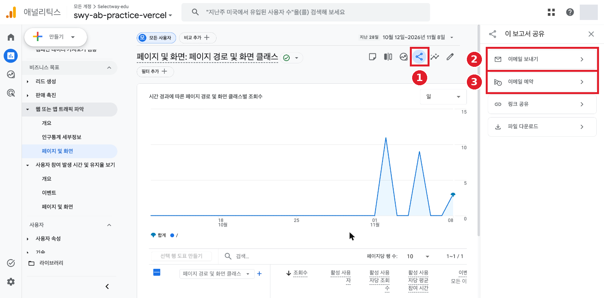
보고서 이름을 [수업 실습] 페이지 보고서 테스트로 바꾸고, 수신자 목록에 내 이메일을 넣어 목록에 뜬 내 이름을 골라요. [보내기](①)를 눌러요.
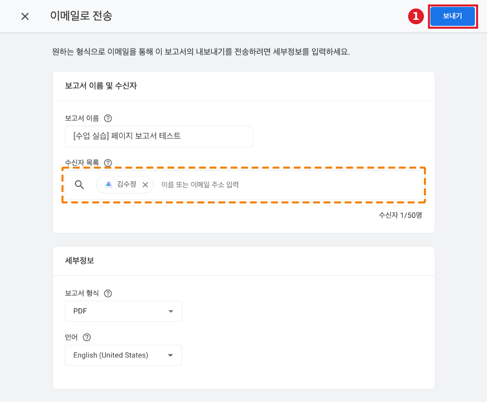
실행 결과
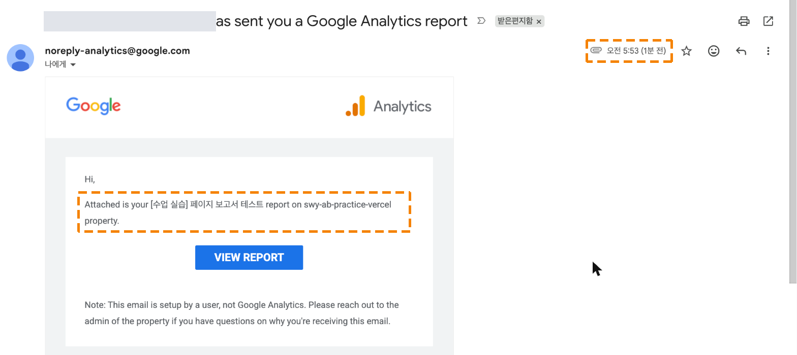
STEP 3. 매주 받도록 예약하기
다시 공유 아이콘 → [이메일 예약]을 눌러요. 보고서 이름은 [수업 실습] 주간 페이지 보고서, 수신자는 내 이메일, 빈도는 [매주], 사용 기간은 실습이니 [1개월], 언어는 [한국어]로 하고 [저장](①)을 눌러요.
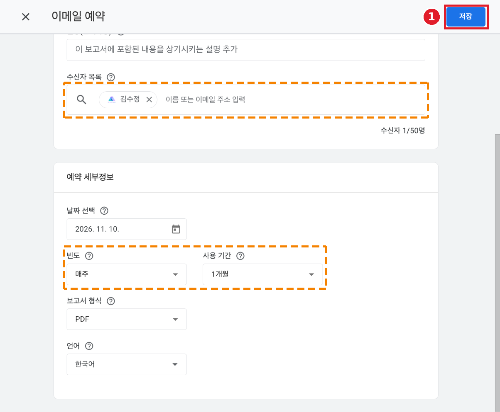
[관리] → [예약된 이메일]에 방금 만든 예약이 '예약됨'으로 보이면 성공이에요. 필요 없어지면 여기서 지워요.
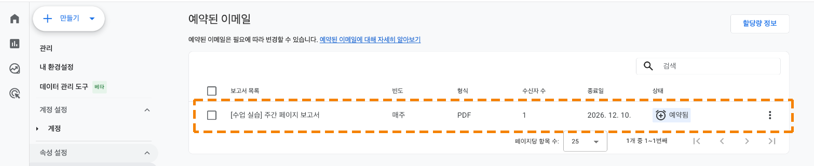
확인할 점
- [이메일 보내기]로 보낸 보고서가 내 메일함에 PDF 첨부로 왔다
- [예약된 이메일] 목록에 매주 예약이 '예약됨'으로 보인다
- 데모 계정에서는 이메일 메뉴가 없는 이유(보기 권한)를 말할 수 있다
출처: Google 애널리틱스 고객센터 보고서 이메일 예약 (2026.11.09 확인)
결과4-5. 결과
이렇게 보이면 성공PC와 휴대폰으로 연 방문이 실시간 보고서에 보인다
[신청하기] 클릭처럼 우리 서비스만의 행동을 세려면 이벤트 이름부터 정해야 해요. 5세션에서 설계해요.
이벤트 텍소노미: 무엇을 어떤 이름으로 셀까
4세션에서 유입경로의 단계가 결국 이벤트 이름이라는 것을 봤어요. 이번에는 현장에서 GA를 누가 어떻게 쓰는지, 이벤트 이름을 정하지 않으면 무슨 일이 생기는지 실제 사례로 보고, 연말 이벤트 신청 페이지의 이벤트 표를 직접 설계해요.
개념5-1. 현장에서 GA는 누가 쓰고, 태그는 왜 번거로울까
GA를 쓰는 사람
| 역할 | 주로 보는 것 | GA로 하는 일 |
|---|---|---|
| 마케터 | 광고·이메일·SNS로 몇 명이 들어왔나 | 캠페인 주소에 UTM을 붙이고 채널별 성과를 봐요 |
| PM·기획자 | 사용자가 어느 단계에서 떠나나 | 유입경로를 만들고, 필요한 이벤트를 정해 개발팀에 요청해요 |
| 데이터 분석가 | 숫자가 맞는지, 왜 바뀌었는지 | 탐색 보고서·데이터 추출로 깊이 분석해요 |
| 개발자 | 이벤트가 제때 정확히 보내지는지 | 코드나 태그 관리 도구로 이벤트를 심고 확인해요 |
이벤트 하나를 추가하는 데 거치는 일
파라미터를 맞춤 측정기준으로 등록해도 보고서에 보이기까지 24~48시간이 걸릴 수 있어요. 사이트를 고치다가 이벤트 코드가 빠지면 그날부터 숫자가 0이 되고, 지나간 기간은 다시 모을 수 없어요. 강사가 현장에서 자주 본 문제는 세 가지예요. 개발자가 GA4를 다뤄 본 적이 없고, 담당자가 바뀔 때 인수인계가 없고, 같은 행동을 여러 이벤트가 겹쳐 세요. 그래서 많은 팀이 UTM으로 유입만 보고 이벤트 분석은 시작도 못 하기도 해요.
구글은 2012년에 Google Tag Manager를 내놓으며, 태그 하나를 넣는 데 IT팀 시간이 많이 들던 일을 코드 수정 없이 할 수 있게 했다고 소개했어요. 태그 관리 도구를 써도 무엇을 어떤 이름으로 셀지는 사람이 정해야 해요.
출처: Google 애널리틱스 고객센터 맞춤 측정기준·측정항목 · DebugView · Google 공식 블로그 Google Tag Manager 출시(2012.10) (2026.11.09 확인)
개념5-2. 이벤트 텍소노미란?
이벤트 텍소노미란?
이벤트 텍소노미는 어떤 행동을, 언제, 어떤 이름과 파라미터로 셀지 정한 약속 표예요. 트래킹 플랜이라고도 불러요. 개발자는 이 표를 보고 이벤트를 심고, PM과 마케터는 이 표를 보고 보고서를 읽어요.
이름은 이렇게 지어요
- 대상_행동 순서로 지어요. 예: apply_button_click, apply_submit. 도구마다 권하는 모양은 조금 달라요. Mixpanel은 song_played처럼 소문자와 밑줄(snake_case)을, Segment는 '대상 + 행동' 구조를 권해요. 한 가지를 골라 끝까지 지키는 것이 중요해요.
- GA4 이벤트 이름은 대소문자를 구분해요. Apply_Submit과 apply_submit은 다른 이벤트로 세져요. 문자로 시작해야 하고, 띄어쓰기를 쓸 수 없고, 40자를 넘을 수 없어요.
- 바뀌는 값(상품 이름, 날짜, 페이지 이름)은 이벤트 이름에 넣지 않고 파라미터로 보내요. 예: item_click_셔츠가 아니라 item_click + item_name=셔츠.
- GA4에는 이름과 파라미터가 미리 정해진 추천 이벤트가 있어요. 예를 들어 폼으로 신청·문의를 받으면 generate_lead, 회원가입은 sign_up, 구매는 purchase예요. 맞춤 이벤트를 만들기 전에 추천 이벤트 목록에 맞는 것이 있는지 먼저 봐요. 구매처럼 GA4가 정한 이름을 써야 기본 보고서에 잡히는 것도 있어요.
- 이메일·전화번호 같은 개인정보는 파라미터에 넣지 않아요.
표에는 이 칸이 있어야 해요
| 이벤트 이름 | 언제 보내나 | 어디서 | 파라미터 | 답하려는 질문(지표) |
|---|---|---|---|---|
| apply_button_click | [신청하기]를 누를 때 | 신청 페이지 상단·하단 | button_position | 어느 위치의 단추가 많이 눌리나 |
'언제 보내나' 칸이 가장 중요해요. "신청 단추를 누를 때"와 "신청이 저장된 뒤"는 다른 숫자예요. 단추를 눌렀지만 빈칸 때문에 저장되지 않은 신청도 세지기 때문이에요. 이 칸이 비어 있으면 다음 사례 같은 일이 생겨요.
출처: Google 애널리틱스 고객센터 추천 이벤트 · 이벤트 이름 지정 규칙 · 수집 한도(이름 길이) · 이벤트 종류(자동·향상된 측정·추천·맞춤) · Mixpanel 이벤트·속성 · Segment 트래킹 계획 (2026.11.09 확인)
사례5-3. 실무 사례: 구독형 미디어 A사의 GA 점검
강사가 2026년에 실제로 맡았던 GA 점검 프로젝트예요. 고객사 이름과 숫자는 가리고, 비율만 남겼어요.
구독형 경제 미디어 A사가 해마다 여는 구독 이벤트를 진행했어요. 이벤트 기간 방문자는 작년의 약 2배였는데, 환불을 뺀 결제 금액은 오히려 줄었어요. "방문자는 늘었는데 왜 매출은 줄었나?"를 확인하려고 GA, 회원 데이터베이스, 결제 데이터를 함께 대조했어요.
| 발견 | 무엇이 있었나 | 그래서 생긴 일 |
|---|---|---|
| 1. 이벤트 이름이 제각각 | 한글 이름('가입', '구독하기')과 영문 이름(register, purchase)이 섞여 있었어요. 가입을 뜻하는 이벤트만 네 개였고, 페이지 이름을 그대로 이벤트 이름으로 쓴 것도 있었어요 | "가입이 몇 명인가"에 답하려면 어느 이벤트를 봐야 하는지부터 회의해야 했어요 |
| 2. '언제'가 정해져 있지 않음 | '가입' 이벤트가 가입을 마칠 때가 아니라 가입 페이지를 열 때 보내지고 있었어요 | GA의 '가입' 수가 회원 데이터베이스의 실제 신규 가입자 수의 약 100배였어요 |
| 3. 태그가 끊김 | 사이트를 고친 뒤 기사 클릭·결제 시작 같은 이벤트가 0이 되었어요 | 작년과 GA로 비교할 수 없어서, 결제 데이터로 따로 확인했어요 |
| 4. 늘어난 방문의 질 | 늘어난 방문은 대부분 주소를 직접 입력한 유입이었고, 해외 데이터센터가 있는 도시에서 왔고, 머문 시간이 1초 안팎이었어요 | 사람이 아닌 프로그램(봇) 방문이 섞였을 가능성이 컸어요. 국내 방문은 오히려 약 60% 줄었어요 |
| 5. 기본 보고서가 맞지 않음 | GA4 기본 '구매 여정' 보고서는 장바구니 단계가 있는 쇼핑몰 기준이에요 | 장바구니가 없는 구독 서비스라 단계가 0으로 나왔어요. 4세션에서 해 본 유입경로 탐색으로 따로 만들었어요 |
그래서 어떻게 바꾸기로 했나
사이트를 새로 만들 때 GA도 처음부터 다시 설정하기로 하고, 이벤트 표를 아래처럼 새로 짰어요(일부).
| 이벤트 이름 | 언제 | 파라미터(일부) | 예전 이벤트 |
|---|---|---|---|
| article_view | 기사 페이지가 열릴 때 | article_id, login_status | page_view로 대신하던 것 |
| signup_cta_click | 무료 가입 단추를 누를 때 | cta_id, placement | click_cta_signup |
| signup_complete | 가입이 완료된 직후 | signup_method | 가입 · register · 회원가입완료 |
| paywall_impression | 유료 안내 상자가 화면에 보일 때 | article_id, paywall_type | 없음 |
| plan_select | 월간·연간 상품을 고를 때 | plan_id, billing_period | 없음 |
| purchase | 결제가 성공한 직후 | transaction_id, value, currency | purchase(유지) |
이 사례에서 배울 점
- 데이터는 한 곳만 믿지 않아요. GA, 회원 데이터베이스, 결제 데이터를 대조해야 진짜 숫자가 보여요
- 이벤트 이름보다 '언제 보내나'가 더 중요해요
- 사이트를 고칠 때마다 이벤트가 그대로 들어오는지 확인해요
- 방문자 수가 늘었다고 좋은 소식은 아니에요. 어디서, 얼마나 머물렀는지 같이 봐요
실습5-4. 연말 이벤트 신청 페이지의 이벤트 텍소노미 설계
2세션에서 만든 A/B 테스트 계획을 판정하려면 어떤 이벤트가 필요한지 표로 설계해요.
STEP 1. 먼저 혼자 적기 (10분)
신청 페이지에서 사용자가 하는 행동을 순서대로 적어요. 페이지 열기 → 혜택 보기 → [신청하기] 누르기 → 입력하기 → 제출 → (빈칸이면 안내) → 완료. 행동마다 5-2의 다섯 칸(이름·언제·어디서·파라미터·질문)을 채워요.
STEP 2. 클로드에게 검토받기
프롬프트
요청: 내가 만든 GA4 이벤트 텍소노미 표를 검토하고 고친 표를 줘. 내용: 연말 이벤트 신청 페이지야. 판정하려는 가설은 [2세션 가설]이야. 내 표는 [내 표 붙여 넣기]야. 이름은 소문자와 밑줄로 '대상_행동' 순서로 짓고, GA4 추천 이벤트로 대신할 수 있는 것은 알려 줘. 개인정보는 파라미터에 넣지 마. 형식: 고친 표(이벤트 이름 / 언제 보내나 / 어디서 / 파라미터 / 답하려는 질문) + 내 표에서 바뀐 곳과 이유 목록.
실행 결과
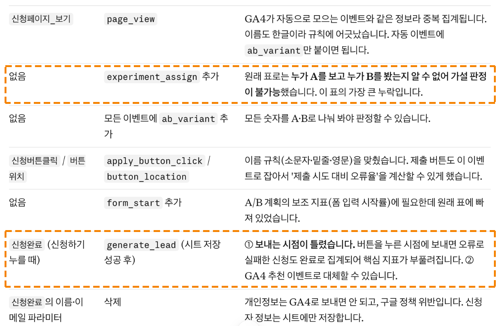
강사는 일부러 틀린 표(한글 이름, 대문자 섞인 이름, "신청하기 누를 때" 보내는 신청 완료, 이름·이메일 파라미터)를 넣어 봤어요. 클로드는 신청 완료를 시트 저장이 성공한 뒤 보내도록 바꾸고, 이름·이메일 파라미터를 지우고, 누가 A와 B를 봤는지 남기는 이벤트가 빠졌다고 짚었어요. 또 신청 완료는 GA4 추천 이벤트 generate_lead로 대신할 수 있다고 알려 줬어요. 추천 이벤트는 GA4가 정한 이름을 그대로 써야 해서, '대상_행동' 규칙의 예외가 돼요.
STEP 3. 강사 예시와 견주기
강사 예시 표
| 이벤트 이름 | 언제 보내나 | 어디서 | 파라미터 | 답하려는 질문 |
|---|---|---|---|---|
| page_view (자동) | 페이지가 열릴 때 | 신청 페이지 | page_location | 몇 명이 봤나 |
| apply_button_click | [신청하기]를 누를 때 | 상단 혜택 영역·하단 | button_position, ab_variant | 어느 단추가, 어느 안에서 많이 눌리나 |
| form_start (향상된 측정) | 입력 칸을 처음 건드릴 때 | 신청 폼 | (자동) | 폼까지 온 사람은 몇 명인가 |
| apply_error | 빈칸·형식 안내가 화면에 뜰 때 | 신청 폼 | error_field | 어느 칸에서 막히나 |
| experiment_assign | 방문자가 A·B 중 한 안으로 정해진 직후 한 번 | 신청 페이지 | experiment_id, ab_variant | 누가 어느 안을 봤나 |
| generate_lead (추천 이벤트) | 신청이 시트에 저장된 뒤 | 신청 완료 화면 | form_name, ab_variant | 신청 완료율, A·B 중 어느 안이 이겼나 |
experiment_assign과 ab_variant 파라미터가 있어야 2세션의 A/B 테스트를 판정할 수 있어요. 폼 이벤트를 직접 보낼 때는 향상된 측정의 폼 상호작용을 꺼야 form_start가 두 번 세지지 않아요. 파라미터를 보고서에서 쓰려면 GA4 [관리]에서 맞춤 측정기준으로 등록해요. 이름·연락처는 어디에도 없어요.
확인할 점
- 모든 이벤트에 '언제 보내나'가 한 문장으로 적혀 있다
- 이름이 모두 소문자와 밑줄, '대상_행동' 순서다
- 바뀌는 값(안 이름, 단추 위치)은 이름이 아니라 파라미터에 있다
- 개인정보가 파라미터에 없다
- 2세션 가설의 핵심 지표를 이 표의 이벤트로 셀 수 있다
4-2에서 GA를 붙인 내 이벤트 신청 페이지에 apply_button_click 하나를 클로드 코드로 심어 보고, GA4 [관리] → [데이터 표시] → [DebugView]에서 들어오는지 확인해 봐요. 목요일에 클로드 코드를 설치한 뒤 해도 돼요.
결과5-5. 결과
이렇게 보이면 성공표만 보고 개발자가 이벤트를 심을 수 있고, 2세션 가설을 이 표의 숫자로 판정할 수 있다
오늘 정리와 과제
오늘의 규칙
- 알고 싶은 질문을 먼저 정하고, 질문마다 필요한 데이터를 고른다
- 가설은 셀 수 있는 지표로 판정한다. 좋아 보인다고 일찍 멈추지 않는다
- 원본은 두고 정리본을 만든다. 규칙으로 판단할 수 없는 줄은 지우지 않고 '확인 필요'로 표시한다
- 입력한 내용은 시트에, 방문 같은 행동은 GA에 모은다. 개인 정보는 GA로 보내지 않는다
- 이벤트는 심기 전에 이름·언제·파라미터를 표로 정한다. 데이터는 한 곳만 믿지 않는다
데이터 지도 + A/B 테스트 계획 + [정리본] 시트 + GA 실시간 보고서 + 데모 계정 유입경로 보고서 + 이벤트 텍소노미 표
① [정리본]의 '확인 필요' 18줄 중 '중복 신청 의심' 한 쌍을 골라, 두 줄 중 어느 줄을 남길지와 그 이유를 한 문장으로 적어 와요.
② 내가 자주 쓰는 쇼핑몰 하나를 골라 '방문 → 상품 보기 → 장바구니 → 구매' 유입경로에서 가장 많이 빠질 것 같은 단계와 그 단계를 셀 이벤트 이름 하나를 적어 와요.
복습: 시트·앱스스크립트로 신청 받기
지난주 금요일 오후에 구글 시트를 웹 페이지처럼 만들어 봤던 것 기억하시나요? 그 실습을 단계별로 다시 정리해 두었어요. 지난주 실습을 마친 사람은 건너뛰고, 신청 명단 시트가 없거나 다시 해 보고 싶은 사람만 쉬는 시간이나 과제로 해요. 3세션에서 쓰는 신청 명단 시트도 여기서 만들 수 있어요.
복습 1 · 구글 시트를 데이터 창고로 쓰기눌러서 펼쳐 보세요
지난주 금요일에 신청 페이지를 만들고 신청을 Firestore에 저장했던 것 기억하시나요? 오늘은 같은 일을 구글 시트로 해요.
개념복습 1-1. 앱스스크립트란?
앱스스크립트란?
앱스스크립트는 구글 시트·지메일·드라이브를 코드로 움직이게 하는 구글의 도구예요. 시트 메뉴에서 바로 열 수 있고, 따로 설치할 것이 없어요.
어떤 문제를 해결하나요?
시트만으로는 다른 사람이 쓰기 좋은 화면을 만들기 어려워요. 앱스스크립트로 웹 앱을 만들면 시트 내용을 웹 페이지로 보여 주고, 입력 화면에서 받은 값을 시트에 쌓을 수 있어요.
조심할 점
웹 앱을 '모든 사용자'에게 공개하면 주소를 아는 사람은 누구나 열 수 있어요. 실제 고객의 연락처가 든 시트는 이렇게 공개하지 않아요. 오늘은 가상 데이터만 써요.
출처: 구글 공식 문서 Apps Script 개요 · 웹 앱(Web Apps) (2026.11.08 확인)
구글 시트 위쪽 메뉴에서 [확장 프로그램](①) → [Apps Script](②)를 눌러요. 내가 만든 앱스스크립트 프로젝트는 https://script.google.com/home 에서 모아 볼 수 있어요.
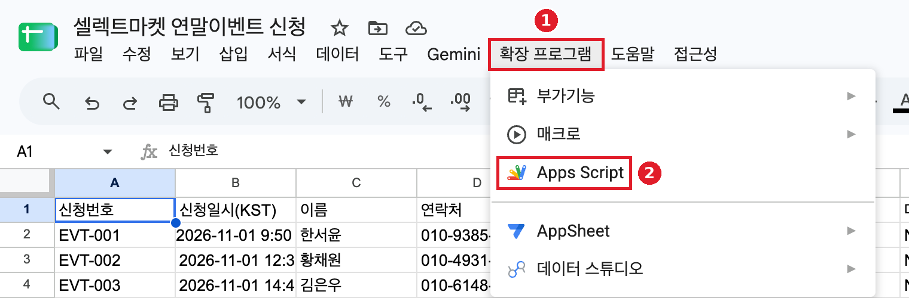
복습 2 · 빈 시트를 클로드로 채우기눌러서 펼쳐 보세요
연습할 데이터가 있어야 웹 페이지를 만들 수 있어요. 이커머스 셀렉트마켓 연말 이벤트 신청 명단 100줄을 클로드에게 만들게 해요.
실습복습 2-1. 신청 명단 100줄을 만들어 시트에 넣기
STEP 1. 빈 시트 만들기
크롬 주소창에 sheets.new 를 입력해 빈 시트를 만들어요. 왼쪽 위 제목(①)을 눌러 [셀렉트마켓 연말이벤트 신청]으로 바꿔요.
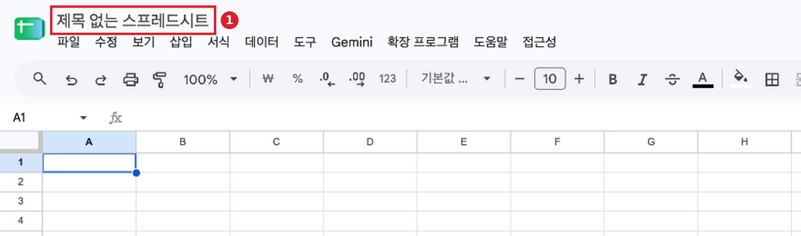
STEP 2. 클로드에게 신청 명단 받기
클로드 새 대화에 아래 프롬프트를 붙여 넣어요. 클로드가 CSV 파일을 만들면 대화 아래에 파일 카드가 생겨요. 카드에 마우스를 올리면 나오는 내려받기(①)를 눌러요.
프롬프트
요청: 이벤트 신청 연습용 가상 데이터 100줄을 CSV 파일로 만들어 줘. 내용: 이커머스 셀렉트마켓 연말 이벤트 신청 명단이야. 열은 신청번호(EVT-001부터), 신청일시(KST), 이름, 연락처, 이메일, 참석유형(온라인/오프라인), 유입경로, 마케팅수신동의(Y/N), 상태(확정/취소) 9개야. 이름·연락처는 실제 사람이 아닌 가상 값으로, 이메일은 example.com 주소로만 만들어 줘. 형식: 첫 줄은 열 이름, 그다음 100줄. 내려받을 수 있는 CSV 파일 하나로 줘.
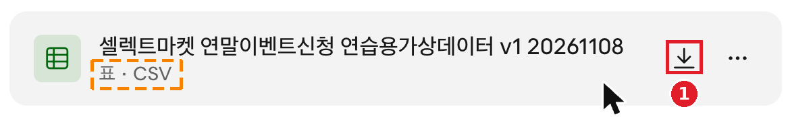
STEP 3. 시트로 가져오기
시트 위쪽 메뉴에서 [파일](①) → [가져오기](②)를 눌러요.
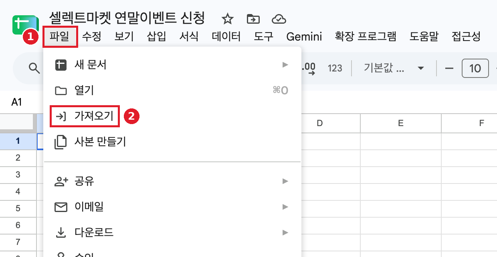
시트에서 파일 가져오기 메뉴를 여는 곳 빨간 번호 = 누를 곳(순서) [업로드] 탭(①)을 누르고, 내려받은 CSV 파일을 가운데 상자(②)에 끌어다 놓아요.
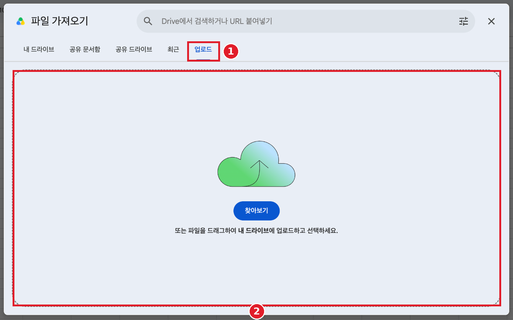
가져오기 창의 업로드 탭 빨간 번호 = 누를 곳(순서) 가져오기 위치는 [현재 시트 바꾸기](①)를 골라요. [데이터 가져오기](②)를 누르면 빈 시트가 명단으로 채워져요.
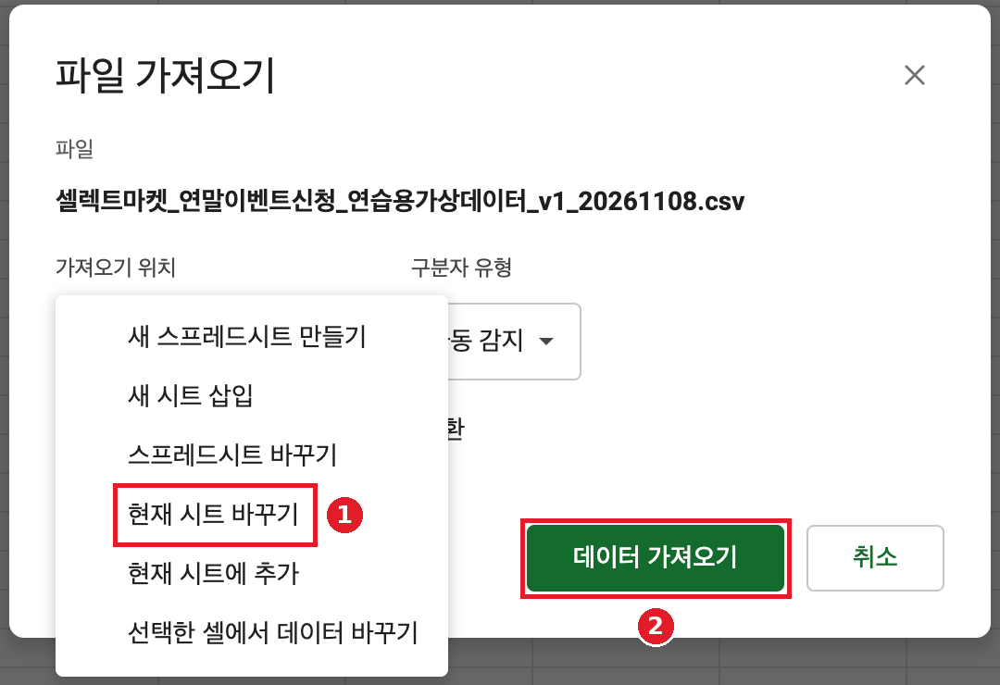
가져오기 위치를 고르는 창 빨간 번호 = 누를 곳(순서) 아래쪽 시트 탭 이름이 [시트1]인지 확인해요. 복습 3의 프롬프트에 이 이름을 써요.
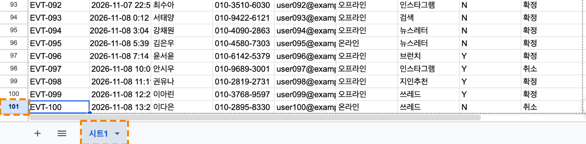
명단 100줄이 채워진 시트 주황 점선 = 확인할 곳
확인할 점
- 첫 줄이 열 이름 9개이고, 그 아래가 100줄이다(마지막 줄 번호 101)
- 이메일이 모두 example.com으로 끝난다
- 참석유형에 '온라인'과 '오프라인' 말고 다른 값이 없다
막히면
| 이렇게 보이면 | 이렇게 해요 |
|---|---|
| 클로드가 파일 대신 표를 대화창에 보여 줘요 | "이 표를 내려받을 수 있는 CSV 파일로 만들어 줘."라고 한 번 더 보내요. |
| 한글이 깨져 보여요 | "UTF-8 CSV로 다시 만들어 줘."라고 보내고 다시 가져와요. |
| 100줄보다 적어요 | "모자란 줄을 이어서 EVT-○○○부터 채워 줘."라고 보내요. 번호는 내 시트의 마지막 번호 다음으로 써요. |
결과복습 2-2. 결과
이렇게 보이면 성공[시트1]에 열 이름 9개와 신청 100줄이 보인다
링크가 있으면 누구나 볼 수 있어요(보기 전용, 편집 불가). 내 시트를 먼저 만든 다음 비교해요.
복습 3 · 시트를 웹 페이지처럼 보여 주기눌러서 펼쳐 보세요
복습 2에서 채운 신청 명단 시트를 열어요. 이 시트를 검색·필터가 되는 웹 페이지로 만들어 휴대폰에서도 열어 봐요.
개념복습 3-1. 웹 앱과 배포란?
웹 앱이란?
웹 앱은 앱스스크립트 코드를 인터넷 주소로 열 수 있게 만든 것이에요. 주소는 https://script.google.com/macros/s/…/exec 모양이에요.
이번 실습에서는 새로운 코드가 몇 가지 나와요
클로드가 준 코드에서 아래 세 가지를 찾아보면 코드가 하는 일을 알 수 있어요. 외우지 않아도 돼요.
| 코드 | 하는 일 |
|---|---|
function doGet() | 누군가 웹 앱 주소를 열면 가장 먼저 실행돼요. 웹 앱에는 이 함수가 꼭 있어야 해요. |
HtmlService.createHtmlOutputFromFile('index') | index.html 파일을 화면으로 만들어 보여 줘요. |
SpreadsheetApp…getDataRange().getValues() | 시트의 표 전체를 읽어 와요. |
조심할 점
코드를 고치고 [저장]만 하면 웹 앱 주소에는 바뀐 화면이 나오지 않아요. 고친 코드는 새 버전으로 다시 배포해야 주소에 반영돼요. 복습 3-3에서 해요.
출처: 구글 공식 문서 웹 앱(doGet, 배포) · 배포 만들기와 관리(버전) (2026.11.08 확인)
실습복습 3-2. 시트를 웹 페이지로 배포하기
STEP 1. 앱스스크립트 열기
신청 명단 시트에서 [확장 프로그램] → [Apps Script]를 눌러요. 새 탭에 앱스스크립트 편집기가 열리고, 왼쪽 [파일] 목록에 Code.gs가 보여요.
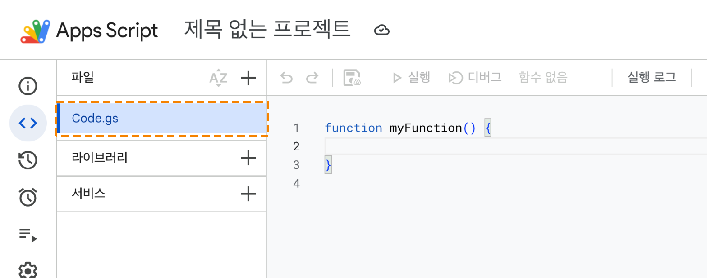
STEP 2. 클로드에게 코드 받기
클로드에게 아래 프롬프트를 보내요. 지난주 금요일 오후에 쓴 프롬프트를 요청·내용·형식으로 나눈 것이에요.
프롬프트
요청: 이 구글 시트를 웹 페이지처럼 보여 주는 앱스스크립트 코드를 짜 줘. 내용: 시트 탭 이름은 [시트1]이고, 첫 줄은 열 이름(신청번호, 신청일시(KST), 이름, 연락처, 이메일, 참석유형, 유입경로, 마케팅수신동의, 상태), 그 아래 신청 100줄이 있어. 디자인을 입혀 주고, 100줄을 검색하고 참석유형·상태로 거를(필터) 수 있게 해 줘. 휴대폰에서도 보기 좋게(모바일 반응형) 해 줘. 형식: Code.gs와 index.html 두 파일로 나눠서, 파일마다 처음부터 끝까지 전체 코드를 줘. 붙여 넣는 곳과 배포 순서도 짧게 적어 줘.
실행 결과
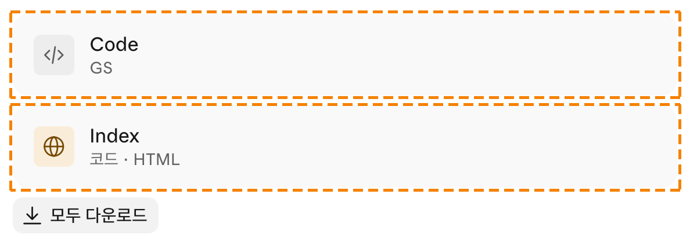
STEP 3. 코드 붙여 넣고 저장하기
클로드는 코드를 대화 아래 파일 카드(Code, Index)로 줘요. 카드(①)를 누르면 오른쪽에 코드가 열려요. 오른쪽 위 [복사](②)를 누르면 코드 전체가 복사돼요.
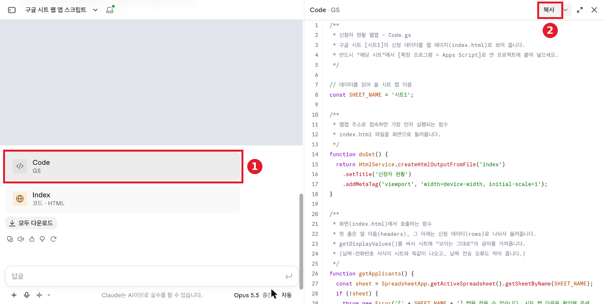
왼쪽에서 Code.gs(①)를 누르고, 오른쪽 코드 칸(②)에 있던
function myFunction() {}을 모두 지워요. Code 카드에서 복사한 코드를 붙여 넣어요(Ctrl+V, 맥은 Cmd+V).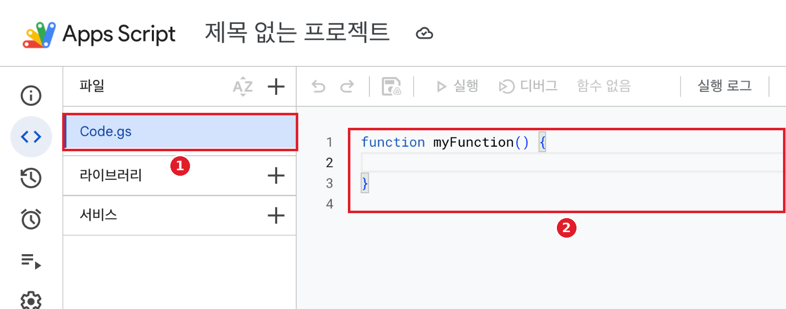
Code.gs에 코드를 붙여 넣는 곳 빨간 번호 = 누를 곳(순서) 왼쪽 [파일] 옆 [+](①)를 누르고 [HTML](②)을 골라요. 파일 목록에 생긴 이름 칸에
index만 쓰면 index.html이 만들어져요. 안의 내용을 지우고, Index 카드에서 복사한 코드를 붙여 넣어요.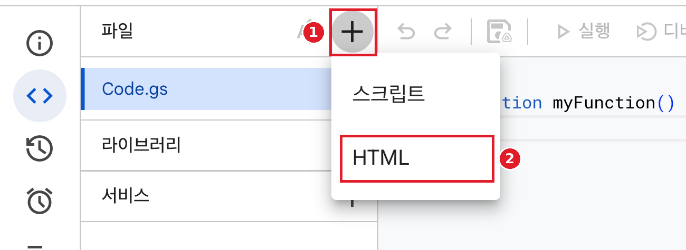
HTML 파일을 새로 만드는 곳 빨간 번호 = 누를 곳(순서) 위쪽 저장 아이콘(①, 또는 Ctrl+S, 맥은 Cmd+S)을 눌러 두 파일을 모두 저장해요. 저장하기 전에는 프로젝트 이름 옆에 '저장되지 않은 변경사항'이 보이고, 저장하면 'Drive에 저장됨'으로 바뀌어요.
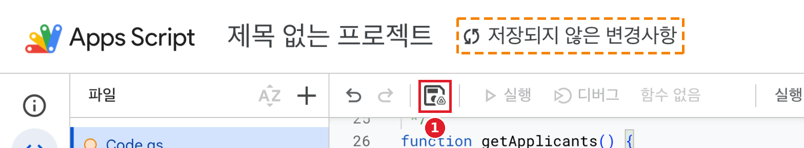
두 파일을 저장하는 곳 빨간 번호 = 누를 곳(순서) 주황 점선 = 확인할 곳
STEP 4. 웹 앱으로 배포하기
오른쪽 위 [배포](①) → [새 배포](②)를 눌러요.
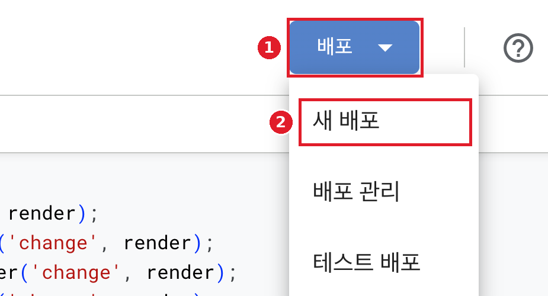
배포 메뉴 빨간 번호 = 누를 곳(순서) [유형 선택] 옆 톱니바퀴(①)를 누르고 [웹 앱](②)을 골라요.
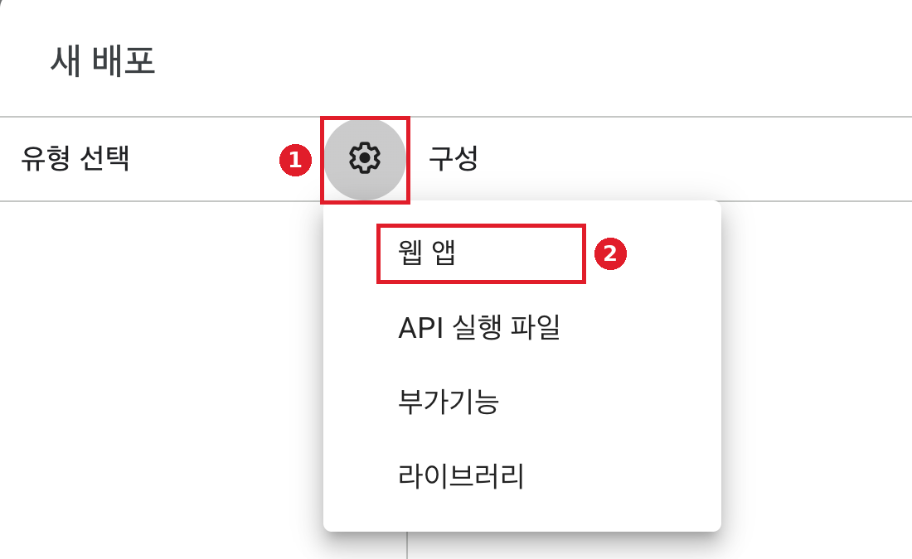
배포 유형을 고르는 곳 빨간 번호 = 누를 곳(순서) 설명(①)에는 [신청 명단 보기 1차]를 써요. [다음 사용자 인증 정보로 실행](②)은 [나(내 이메일)] 그대로 둬요. [액세스 권한이 있는 사용자](③)는 [나만], [○○의 모든 사용자](회사 계정일 때만 보여요), [Google 계정이 있는 모든 사용자], [모든 사용자] 중에서 골라요. 오늘은 가상 데이터라서 [모든 사용자]로 해요. 그다음 아래 [배포]를 눌러요.
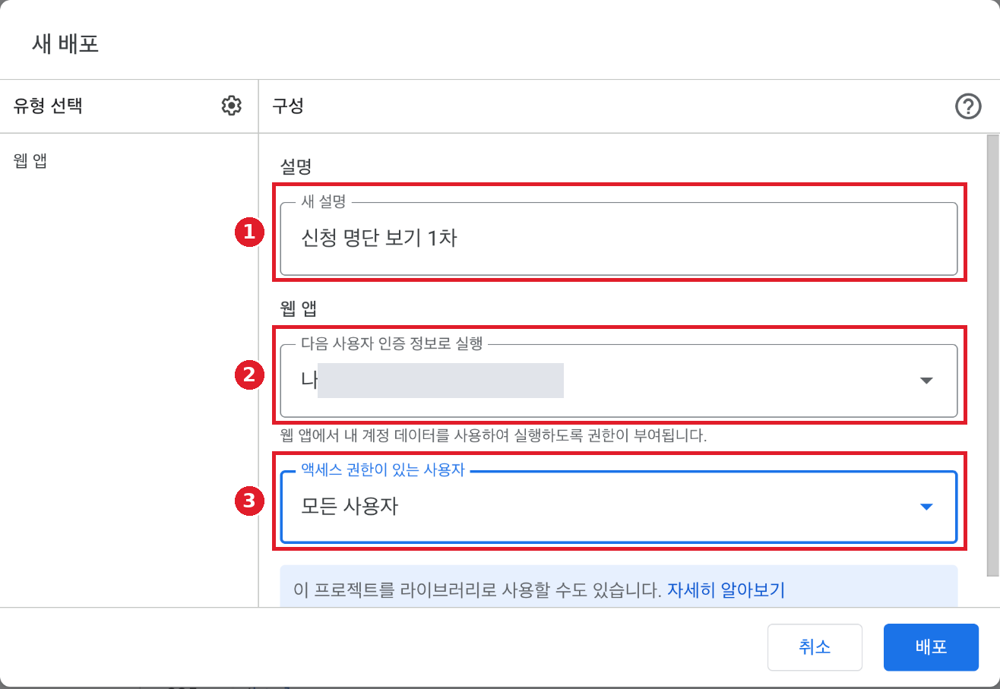
웹 앱 배포 설정 빨간 번호 = 누를 곳(순서) "웹 앱에서 내 데이터에 대한 액세스 권한 부여를 나에게 요청합니다."가 나오면 [액세스 승인](①)을 눌러요. 새 창이 뜨면 수업용 계정을 골라요.
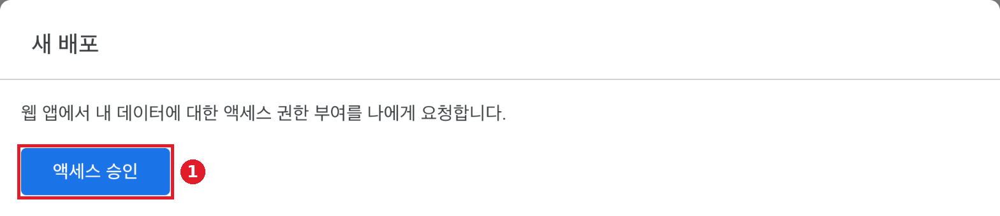
처음 배포할 때 나오는 권한 창 빨간 번호 = 누를 곳(순서) "확인되지 않은 앱" 경고가 나오면 [고급](①)을 누르고 [(프로젝트 이름)(으)로 이동(안전하지 않음)](②)을 눌러요. 내가 만든 코드라서 넘어가도 돼요.
캡처 자리images/d1-s3-unverified-hl.png누를 곳 · ① [고급] ② [(프로젝트 이름)(으)로 이동(안전하지 않음)]확인되지 않은 앱 경고 화면 빨간 번호 = 누를 곳(순서) 앱스스크립트가 쓸 권한 목록이 나오면 [계속](①)을 눌러요. 창에 "Has been successfully authorized"가 보이면 닫아요.
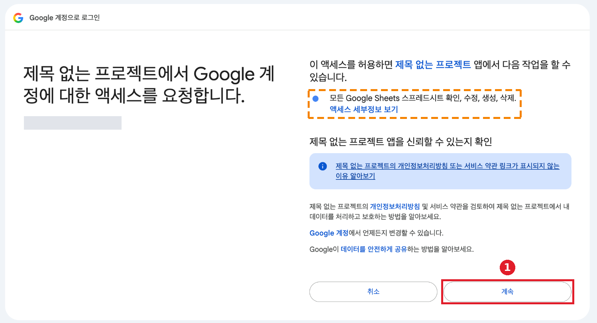
권한 목록 화면 빨간 번호 = 누를 곳(순서) 주황 점선 = 확인할 곳 배포가 끝나면 [웹 앱] 아래 주소가 나와요. [복사](①)를 눌러 주소를 복사해요.
캡처 자리images/d1-s3-deploy-url-hl.png누를 곳 · ① [복사]확인할 곳 · …/exec로 끝나는 웹 앱 주소배포가 끝난 화면 빨간 번호 = 누를 곳(순서) 주황 점선 = 확인할 곳
STEP 5. 주소 열어 보기
복사한 주소를 새 탭에 붙여 넣어 열어요. 카카오톡 '나에게 보내기'로 주소를 보내 휴대폰에서도 열어 봐요.
실행 결과
실행 결과
확인할 점
- 시트의 100줄이 웹 페이지에 모두 보인다
- 검색창에 이름 한 글자를 넣으면 맞는 줄만 남는다
- 참석유형·상태로 거르면 줄 수가 바뀐다
- 휴대폰에서 글자가 잘리지 않고 읽힌다
막히면
| 이렇게 보이면 | 이렇게 해요 |
|---|---|
| 클로드 파일 미리보기에 'google is not defined' 오류가 보여요 | 앱스스크립트 밖(클로드 미리보기)에서 열어서 나오는 오류예요. 코드를 앱스스크립트에 붙여 넣고 웹 앱 주소로 열면 괜찮아요. |
| 로그인 화면이 계속 다시 나와요 | 시크릿 창을 열고 시트를 만든 계정 하나로만 로그인한 뒤 주소를 다시 열어요. |
| "스크립트 함수를 찾을 수 없음: doGet"이 나와요 | Code.gs에 function doGet이 있는지 봐요. 없으면 그 문장을 클로드에게 그대로 붙여 넣고 고쳐 달라고 해요. |
| 화면은 나오는데 표가 비어 있어요 | 시트 탭 이름이 코드 속 이름과 같은지 봐요. 다르면 "시트 탭 이름은 [내 탭 이름]이야."라고 클로드에게 보내요. |
| 다른 오류 문장이 나와요 | 오류 문장을 복사해 클로드에게 붙여 넣고, "이 오류를 고친 전체 코드를 줘."라고 보내요. |
출처: 구글 공식 문서 인증·권한 문제 해결("This app isn't verified" → Advanced) (2026.11.08 확인)
실습복습 3-3. 고치고 같은 주소로 다시 배포하기
웹 앱 주소를 이미 다른 사람에게 보냈다면, 주소가 바뀌면 안 돼요. 고친 코드는 같은 배포를 새 버전으로 바꿔서 내보내요.
STEP 1. 하나만 고쳐 달라고 하기
프롬프트
요청: 웹 페이지 맨 위에 제목과 지금 보이는 신청 수를 넣어 줘. 내용: 제목은 [셀렉트마켓 연말 이벤트 신청 명단]이야. 검색하거나 거르면 신청 수도 함께 바뀌게 해 줘. 다른 기능과 디자인은 바꾸지 마. 형식: 바뀐 파일만, 처음부터 끝까지 전체 코드로 줘.
실행 결과
STEP 2. 새 버전으로 배포하기
바뀐 파일의 코드를 통째로 바꿔 붙여 넣고 저장해요.
[배포](①) → [배포 관리](②)를 눌러요.
배포 관리를 여는 곳 빨간 번호 = 누를 곳(순서) 복습 3-2에서 만든 배포가 골라져 있는지 보고 연필 모양 [수정](①)을 눌러요. [버전](②)에서 [새 버전]을 고르고, 설명에 [제목·신청 수 추가]를 써요. [배포](③)를 눌러요.
캡처 자리images/d1-s3-edit-version-hl.png누를 곳 · ① 연필 모양 [수정] ② [버전] → [새 버전] ③ [배포]확인할 곳 · 왼쪽에 고른 배포 이름 [신청 명단 보기 1차]배포를 새 버전으로 바꾸는 창 빨간 번호 = 누를 곳(순서) 주황 점선 = 확인할 곳 복습 3-2에서 복사한 주소를 새로고침해요. 주소는 그대로이고 화면만 바뀌었는지 봐요.
캡처 자리images/d1-s3-same-url-hl.png확인할 곳 · 주소창의 주소가 복습 3-2와 같은지 · 새로 생긴 제목새로고침한 같은 주소의 웹 페이지 주황 점선 = 확인할 곳
이렇게 하면 결과가 틀어져요
| 한 일 | 생기는 일 |
|---|---|
| 저장만 하고 다시 배포하지 않음 | 주소에는 고치기 전 화면이 그대로 나와요. |
| [배포 관리] 대신 [새 배포]를 누름 | 주소가 하나 더 생겨요. 이미 보낸 주소에는 반영되지 않아요. |
출처: 구글 공식 문서 배포 만들기와 관리 — 버전 배포를 수정하면 같은 주소(배포 ID)를 유지한 채 바뀐 코드가 반영돼요 (2026.11.08 확인)
결과복습 3-4. 결과
이렇게 보이면 성공처음 받은 주소를 새로고침하면 제목과 신청 수가 보인다
복습 4 · 입력 화면을 만들고 시트에 쌓기눌러서 펼쳐 보세요
복습 3에서 만든 신청 명단 웹 페이지를 이어서 써요. 구글 설문지처럼 신청을 받는 화면을 더하고, 입력한 값이 시트 맨 아래에 쌓이게 해요.
개념복습 4-1. 화면에서 시트로 보내는 방법
이번 실습에서는 새로운 코드가 두 가지 나와요
| 코드 | 있는 파일 | 하는 일 |
|---|---|---|
google.script.run | index.html | 화면에서 [신청하기]를 누르면 Code.gs의 함수를 불러요. |
sheet.appendRow([…]) | Code.gs | 시트의 마지막 줄 아래에 새 줄 하나를 붙여요. |
조심할 점
입력 화면은 누구나 값을 넣을 수 있어요. 빈칸이나 잘못된 형식이 그대로 쌓일 수 있으니, 저장하기 전에 빈칸을 막는 규칙을 프롬프트에 넣어요. 그래도 쌓이는 문제는 3세션(전처리)에서 정리해요.
그리고 오늘 만드는 웹 앱은 입력 화면과 명단이 한 주소에 있어요. 액세스를 [모든 사용자]로 열면 신청한 사람도 명단 화면에서 다른 사람의 이름과 연락처를 볼 수 있어요. 실제 서비스에서는 신청 화면과 명단 화면을 나누고, 명단은 담당자만 보게 해요. 오늘은 가상 데이터라서 그대로 실습해요.
출처: 구글 공식 문서 HTML 서비스: 서버 함수와 통신(google.script.run) (2026.11.08 확인)
실습복습 4-2. 신청 입력 화면 만들기
STEP 1. 클로드에게 입력 화면 받기
복습 3에서 코드를 받았던 클로드 대화 기억하시나요? 같은 대화에 이어서 보내요. 그래야 클로드가 지금 코드를 알고 고쳐요.
프롬프트
요청: 지금 웹 페이지에 신청 입력 화면을 더해 줘. 구글 설문지처럼 입력하면 [시트1] 맨 아래에 한 줄씩 쌓이게 해 줘. 내용: 입력 칸은 이름, 연락처, 이메일, 참석유형(온라인/오프라인), 유입경로, 마케팅수신동의(Y/N)야. 신청번호(마지막 번호 다음 EVT 번호), 신청일시(KST, 2026-11-09 09:05 형식), 상태(확정)는 자동으로 넣어 줘. 빈칸이 있으면 저장하지 말고 어떤 칸이 비었는지 알려 줘. 저장되면 "신청이 접수됐어요"를 보여 줘. 기존 목록·검색·필터는 그대로 둬. 형식: 바뀐 Code.gs와 index.html을 처음부터 끝까지 전체 코드로 줘. 새 버전으로 다시 배포하는 순서도 적어 줘.
STEP 2. 붙여 넣고 새 버전으로 배포하기
Code.gs와 index.html을 각각 통째로 바꿔 붙여 넣고 저장해요.
복습 3-3처럼 [배포] → [배포 관리] → [수정] → [버전] [새 버전]으로 배포해요. 설명에는 [신청 입력 화면 추가]를 써요.
시트에 새로 쓰는 권한이 필요하면 권한 창이 다시 떠요. 복습 3-2 STEP 4처럼 승인해요.
STEP 3. 휴대폰으로 신청해 보기
휴대폰에서 웹 앱 주소를 열고 입력 화면에 가상의 정보로 한 번 신청해요.
실행 결과
캡처 자리images/d1-s4-form-mobile-hl.png확인할 곳 · 입력 칸 6개 · [신청하기] · 접수 안내 문구휴대폰에서 연 신청 입력 화면 주황 점선 = 확인할 곳 이번에는 이메일 칸을 비우고 [신청하기]를 눌러요. 저장되지 않고 안내 문구가 나오는지 봐요.
실행 결과
캡처 자리images/d1-s4-empty-warning-hl.png확인할 곳 · 어떤 칸이 비었는지 알려 주는 문구빈칸으로 신청했을 때 화면 주황 점선 = 확인할 곳 시트 탭으로 돌아가 맨 아래 줄을 봐요.
캡처 자리images/d1-s4-sheet-appended-hl.png확인할 곳 · 새로 생긴 줄 · 이어진 신청번호 · 신청일시신청한 뒤의 시트 맨 아래 주황 점선 = 확인할 곳
확인할 점
- ① 입력 화면이 휴대폰에서 보이고 [신청하기]를 누를 수 있다
- ② 신청하면 시트 맨 아래에 새 줄이 생기고, 신청번호가 이어진다
- 빈칸으로 신청하면 시트에 줄이 생기지 않는다
- 웹 페이지 목록에도 방금 넣은 신청이 보인다
막히면
| 이렇게 보이면 | 이렇게 해요 |
|---|---|
| "접수됐어요"는 나오는데 시트에 줄이 없어요 | 앱스스크립트 왼쪽 메뉴 [실행](①)을 눌러 실패한 기록(②)을 열어요. 빨간 오류 문장을 복사해 클로드에게 붙여 넣어요. 아래 그림을 봐요. |
| 화면이 바뀌지 않았어요 | 저장만 하고 새 버전으로 배포하지 않았을 수 있어요. 복습 3-3 STEP 2를 다시 해요. |
| 신청번호가 EVT-001부터 다시 시작해요 | "신청번호는 시트의 마지막 신청번호 다음 숫자로 만들어 줘."라고 클로드에게 보내요. |
시트와 다른 서비스를 잇는 일은 코드 없이 Zapier 같은 자동화 도구로도 할 수 있어요. https://zapier.com/
결과복습 4-3. 결과
이렇게 보이면 성공휴대폰에서 신청한 한 줄이 시트 맨 아래에 보인다